参考思路: 概述, 思想特点, 举例, 总结
e.g:面向对象是一种编程思想，强调的是以对象为基础完成各种操作，它是基于面向过程的。说到面向对象，不得不提的就是它的三大思想特点：
- 更符合人们的思考习惯
- 把复杂的事情简单化
- 把程序员从执行者变成指挥者
举例：越符合生活的场景越好
总结：万物皆对象
面向过程和面向对象的区别？
return和print区别？
def test():
return 'Hi'
test()
Jupyter交互编辑器里会打印出'Hi'，但是运行.py文件只return不能打印出来，如果print会打印出Hi，区别在于是否有单引号。
for...else...语法
找到了就break，没找到就else
for ...:
if ...:
...
break
else:
...
字典解包
func(**dict)将字典键值对作为参数传给函数，字典的键必须和函数参数相同，否则报错，
:param args: 数字元组, *args -> 接收所有的位置参数, 封装到 元组
:param kwargs: 字典, 键是字符串, 值是数字, **kwargs -> 接收所有的关键字参数, 封装到 字典
编程思想： 人们利用计算机来解决问题的思维。
面向过程：
以 步骤(过程) 为基础完成各种操作。
面向对象:
以 对象 为基础完成各种操作, 它是基于面向过程的。
面向过程侧重过程，而面向对象是对面向过程的再次封装处理，通过对象来模拟现实世界。
总结: 万物皆对象.
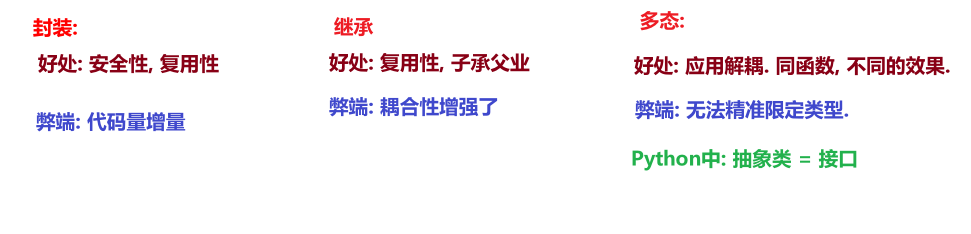
封装
隐藏对象的属性和实现细节，仅对外提供公共的访问方式。
控制在程序中属性的读和修改的访问级别， 将抽象得到的数据和行为(功能)相结合，形成一个有机的整体，即将数据和操作数据的源代码结合形成“类”，其中数据和函数都是类的成员。
提高代码的安全性，以特定的访问权限控制使用类的成员。 (私有化)
提高代码的复用性。 (函数)
手机电脑等都可以封装为一个类
继承
子类继承父类的属性和方法，使得子类对象（实例）具有父类的特征和行为。
满足 “is-a关系”
提高代码的复用性。
耦合性增强
多态
不同类的对象对同一消息做出反应，即同一消息可根据发送对象的不同而采用多种不同的行为方式。
解耦合，可拓展.
# 定义类
class 类名: # 命名遵循大驼峰
# 定义类方法
方法列表...
对象：现实事物的具体体现，具体的实例，张三——张三、男——爱走路来上班、跟女同事聊得来、每月10日上交工资
属性：名词，描述事物的外在特征，例如姓名、性别、年龄
行为：动词，描述事物能够做什么，例如吃、喝、学习
如何访问类中的成员？
step1: 创建该类的对象
对象名 = 类名()
step2: 通过 对象名. 的方式调用
对象名.属性名
对象名.行为名()
"""
案例: 演示定义汽车类 及 使用类中的成员.
需求: 定义汽车类, 有跑的行为.
"""
# 1.定义汽车类
class Car: # 类名遵循大驼峰命名法
# 属性
# 行为
def run(self):
print("汽车会跑")
# 2.创建汽车类的对象
c1 = Car()
# 3.调用Car类的run()函数 调用Car#run()
c1.run()
self 是python内置的关键字，用于指向对象实例本身。
谁调用函数, self就代表哪个对象。
对象名. 的方式访问类中的行为(函数)。self属性，函数通过self来区分到底是哪个对象调用了类的方法。对象名. 的方式访问.self. 的方式访问。'''
案例：self关键字介绍
需求：定义汽车类，创建多个该类的函数，看打印结果
'''
# 1. 定义汽车类.
class Car:
# 属性
# 行为, 跑
def run(self):
print('汽车会跑!...')
print(f'我是run函数, self的值是: {self}')
# 2.创建汽车类的对象.
c1 = Car()
print(f'c1对象:{c1}') # 和{self}一致
# 输出：<__main__.Car object at 0x000002025FFDF1F0>
# __main__.Car → 类名 0x000002025FFDF1F0 → 对象在内存中的地址（十六进制）
print(f'c1对象: {id(c1)}')
# 输出：2209223668208
# 对象在内存中的地址对应的整数（十进制），每次运行可能都不同
# 调用Car#run()
c1.run()
print('-' * 34)
# 3.继续创建汽车类的对象.
c2 = Car()
print(f'c2对象: {c2}')
# 输出：<__main__.Car object at 0x000002025FFDF250>
# 调用Car#run()
c2.run()
"""
案例: 演示通过 self关键字实现 在类内访问其它函数.
需求: 定义汽车类, 类内有run()函数, 并在work()中调用run()函数, 创建该类对象, 调用上述的函数.
"""
# 1. 定义汽车类.
class Car:
# 属性(名词)
# 行为(动词)
# 1.1 run()函数
def run(self):
print(f'{self} 汽车在跑...')
# 1.2 work()函数, 在其内部调用run()
def work(self):
print(f'我是work函数, 我的self值: {self}')
self.run() # self = 本类当前对象的引用.
# 2.在类外访问Car类的行为(函数)
c1 = Car()
print(f'c1对象: {c1}')
c1.run() # c1在跑
print('-' * 34)
c1.work() # c1在work, c1在跑
print('=' * 34) # 分割线
# 3.再次创建对象.
c2 = Car()
print(f'c2对象: {c2}')
c2.run()
print('-' * 34)
c2.work()
# c1对象: <__main__.Car object at 0x00000163CC0DF190>
# <__main__.Car object at 0x00000163CC0DF190> 汽车在跑...
# ----------------------------------
# 我是work函数, 我的self值: <__main__.Car object at 0x00000163CC0DF190>
# <__main__.Car object at 0x00000163CC0DF190> 汽车在跑...
# ==================================
# c2对象: <__main__.Car object at 0x00000163CC0DF1F0>
# <__main__.Car object at 0x00000163CC0DF1F0> 汽车在跑...
# ----------------------------------
# 我是work函数, 我的self值: <__main__.Car object at 0x00000163CC0DF1F0>
# <__main__.Car object at 0x00000163CC0DF1F0> 汽车在跑...
练习： 01_4_example_手机类.py
属性表示的是固有特征，在python中使用变量表示，例如人的姓名、年龄、身高、体重等 （名词） ，都是对象的属性。
对象名.属性 = 属性值 （该属性独属于这个对象, 即:该类的其它对象没有这个属性）对象名.属性self.属性，定义函数show()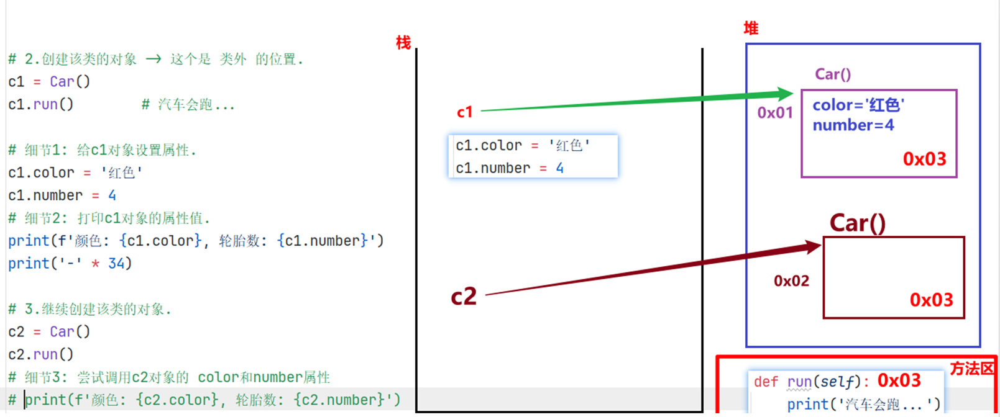
"""
案例: 演示在类外 如何获取 和 设置 对象的属性.
需求: 创建汽车类, 设置为红色, 4个轮胎, 有跑的功能.
"""
# 1.创建汽车类.
class Car:
# 属性(名词), 事物具有哪些特征 -> 变量.
# 行为(动词), 事物能够做什么 -> 函数.
def run(self):
print('汽车会跑...')
# 2.创建该类的对象 -> 这个是 类外 的位置.
c1 = Car()
c1.run() # 汽车会跑...
# 细节1: 给c1对象设置属性.
c1.color = '红色'
c1.number = 4
# 细节2: 打印c1对象的属性值.
print(f'颜色: {c1.color}, 轮胎数: {c1.number}')
print('-' * 34)
# 3.继续创建该类的对象.
c2 = Car()
c2.run()
# 细节3: 尝试调用c2对象的 color和number属性
# print(f'颜色: {c2.color}, 轮胎数: {c2.number}')
"""
案例: 演示类内如何获取对象的属性.
"""
# 1. 定义汽车类, 创建该类对象, 赋予颜色 和 轮胎数两个属性, 并在类内访问该属性.
class Car:
# 属性
# 行为
# 1.1 跑
def run(self):
print('汽车会跑')
# 1.2 定义函数show(), 实现 在类内访问 汽车对象的属性.
def show(self):
print(f'我是show函数, 对象的颜色: {self.color}, 轮胎数: {self.number}')
# 2.创建汽车类的对象
c1 = Car()
# 3. 给其(c1)赋予 属性 -> 类外设置属性.
c1.color = '红色'
c1.number = 4
# 4. 类外访问属性.
print(f"颜色: {c1.color}, 轮胎数: {c1.number}")
# 5. 类外访问行为(类中的函数)
c1.run()
c1.show()
print('-' * 34)
# 6. 继续创建汽车类对象, 尝试分别调用run(), show()函数.
c2 = Car()
c2.run()
# c2.show() # 报错.
属于python内置的函数，总被双下划线所包围，特定场景下自动调用，不需要手动调用。
__init__属性的初始化__str__打印对象__del__删除对象时给出提示__init__()方法在python中，每当新创建一个对象时，就会自动触发__init()__方法，分为“无参”和“有参”两种情况。
在__init__()魔法方法中，初始化属性, 则: 该类所有的对象，一创建，就有这些属性了。
案例1：无参数
"""
案例: 演示 init魔法方法的 用法.
魔法方法:
概述/特点:
Python内置的函数, 在满足特定的场景下, 会被 自动调用.
常用的魔法方法:
__init__()
__str__()
__del__()
"""
# 需求: 定义汽车类, 默认属性为: color='黑色', number=3
# 1. 定义汽车类.
class Car:
# 1.1 在魔法方法 init()中, 初始化: 属性.
def __init__(self):
print('我是 无参 init 魔法方法')
# 1.2 在init魔法方法中, 初始化属性, 则: 该类所有的对象, 一创建, 就有这些属性了.
self.color = '黑色'
self.number = 3
# 1.3 定义show()函数, 打印该类对象的 各个属性值.
def show(self):
print(f'颜色: {self.color}, 轮胎数: {self.number}')
# 2.创建汽车类对象.
c1 = Car() # 会自动调用 __init__()函数.
#### 修改c1的属性值
c1.color = '红色'
c1.number = 6
# 打印c1对象的属性值.
print(c1.color, c1.number)
c1.show()
print('-' * 34)
c2 = Car()
c2.show()
案例2：有参数
"""
案例: 演示魔法方法之 init 有参版, 实际开发常用.
大白话举例:
无参版 init -> 默认上的有底色, 你需要重新涂色(覆盖底色)
有参版 init -> 默认没有涂色的石膏娃娃, 我们根据喜好自由涂色即可.
"""
# 需求: 创建汽车类, 不给默认值, 由汽车对象 外部各自赋值即可.
# 1. 定义汽车类.
class Car:
# 2.有参的 __init__()函数, 参数值由: 外部对象自行赋值.
def __init__(self, color, number):
"""
该魔法方法用于给 汽车类 对象的属性 赋值.
:param color: 车的颜色
:param number: 车的轮胎数
"""
self.color = color
self.number = number
# 定义show()函数, 打印该类对象的 各个属性值.
def show(self):
print(f'颜色: {self.color}, 轮胎数: {self.number}')
# 3. 创建汽车类对象.
# c1 = Car() # 报错, 因为默认调用了init()函数, 但是该函数有参数, 则必须传参.
c1 = Car('红色', 6)
c1.show()
print('-' * 23)
c2 = Car('绿色', 4)
c2.show()
__str__()方法当用print()函数打印对象时，会自动调用该对象(所在类)的 str魔法方法；
该魔法方法默认打印的是对象的内存地址值，无意义，一般都会重写，改为打印对象的各个属性值。
def __str__(self):
# ...
return 字符串结果
"""
案例: 演示 str魔法方法的 用法.
魔法方法:
概述/特点:
Python内置的函数, 在满足特定的场景下, 会被 自动调用.
常用的魔法方法:
__init__() 在(每次)创建对象的时候, 会自动触发该类的 __init__()函数.
__str__() 当用print()函数 打印对象的时候, 会自动调用该对象(所在类)的 str魔法方法.
该魔法方法默认打印的是对象的地址值, 无意义, 一般都会重写, 改为打印 对象的各个属性值.
__del__()
"""
# 1. 定义汽车类.
class Car:
# 2.有参的 __init__()函数, 参数值由: 外部对象自行赋值.
def __init__(self, color, number):
"""
该魔法方法用于给 汽车类 对象的属性 赋值.
:param color: 车的颜色
:param number: 车的轮胎数
"""
self.color = color
self.number = number
# 魔法方法str(), 默认打印地址值, 无意义, 一般会重写, 改为打印对象的各个属性值.
def __str__(self):
return f'颜色: {self.color}, 轮胎数: {self.number}'
# return f'{self.color}, {self.number}'
# 3.创建该类的对象.
c1 = Car('绿色', 4)
print(c1) # 输出语句打印对象, 默认调用了该对象 所在类的 str魔法方法.
print('-' * 23)
c2 = Car('红色', 6)
print(c2)
__del__()方法当.py文件执行结束, 或者 手动 del 释放对象资源, 会自动调用该函数del 对象 ，python解释器会默认调用__del__()方法。
"""
案例: 演示 del魔法方法的 用法.
魔法方法:
概述/特点:
Python内置的函数, 在满足特定的场景下, 会被 自动调用.
常用的魔法方法:
__init__() 在(每次)创建对象的时候, 会自动触发该类的 __init__()函数.
__str__() 当用print()函数 打印对象的时候, 会自动调用该对象(所在类)的 str魔法方法.
该魔法方法默认打印的是对象的地址值, 无意义, 一般都会重写, 改为打印 对象的各个属性值.
__del__() 当.py文件执行结束, 或者 手动 del 释放对象资源, 会自动调用该函数.
"""
# 1. 定义汽车类, 属性: 品牌. 行为:run() 通过del魔法方法删除该类的对象, 看看效果.
class Car:
# 2. 在魔法方法init中, 完成: 属性的初始化.（有参）
def __init__(self, brand):
self.brand = brand
# 3.重写 str魔法方法, 打印对象的属性值.
def __str__(self):
return f'品牌: {self.brand}'
# 4. 重写 del魔法方法, 删除对象时给出提示.
def __del__(self):
print(f'{self} 对象被删除了!')
# 5. 创建汽车类对象.
c1 = Car('小米 Su7 Ultra')
print(c1) # 输出： 品牌：小米 Su7 Ultra
# 6. 手动访问 brand 属性.
print(c1.brand) #输出：小米 Su7 Ultra
print('-' * 23)
# 7.手动删除c1对象, 然后尝试 打印该对象 或者 访问对象的属性.
# del c1
'''
若重写str和del，会打印：品牌：小米 Su7 Ultra 对象被删除了
'''
# print(c1) # 报错.
print('程序结束!')
'''
手动删，会先打印“对象删除；否则，先打印：程序结束。
'''
"""
案例: 减肥案例.
需求:
例如，小明同学当前体重是100kg。每当他跑步一次时，则会减少0.5kg；每当他大吃大喝一次时，则会增加2kg。请试着采用面向对象方式完成案例。
分析:
类名: Student
对象名: xm
属性(名词): 当前体重, current_weight
行为(动词) 跑步, 吃饭
"""
# 1.定义学生类.
class Student:
# 2.在魔法方法init中, 完成: 对象的属性的初始化.
def __init__(self):
# 默认为100，无参版__init__
self.current_weight = 100
# 3.每当他跑步一次时，则会减少0.5kg
def run(self):
print('疯狂跑步...')
self.current_weight -= 0.5 # 体重减小.
# 4.大吃大喝.
def eat(self):
print('大吃大喝一顿...')
self.current_weight += 2
# 5.重写魔法方法str, 打印属性值, 即: 当前体重.
def __str__(self):
# return '当前体重: %s' % self.current_weight
### %s字符串 %d整数 %f浮点数 %.2f保留2位小数
return f'当前体重: {self.current_weight} kg!'
# 6. 测试.
if __name__ == '__main__':
# 6.1 创建学生对象.
xm = Student()
# 6.2 跑步
xm.run()
xm.run()
# 重新运行，回到原始默认的100
# 6.3 吃喝
xm.eat()
# 6.4 当前体重.
print(xm)

"""
案例: 烤地瓜案例.
需求:
1. 定义地瓜类 -> SweetPotato
2. 属性: 被烤时间cook_time, 烘焙状态 cook_state, 调料condiments
3. 行为: 烘烤cook(), 添加调料add_condiment()
4. 魔法方法: init() -> 初始化属性, str() -> 打印地瓜信息.
5. 规则:
烘烤时间 地瓜状态
[0, 3) 生的 包左不包右, 前闭后开.
[3, 7) 半生不熟
[7, 12) 熟了
[12, ∞] 糊了
"""
# 1. 定义地瓜类 -> SweetPotato
class SweetPotato:
# 2. 在魔法方法__init__()中, 初始化地瓜的属性.
def __init__(self):
self.cook_time = 0
self.cook_state = '生的'
self.condiments = []
# 3.具体的烘烤动作.
def cook(self, time):
### 先判断输入值是否有效，再对其判断操作
# 3.1 根据烘烤时间, 修改地瓜的烘烤状态.
if time <= 0:
print('无效值!')
else:
# 3.2 修改地瓜的 烘烤时间.
self.cook_time += time
# 3.3 根据烘烤时间, 修改地瓜的烘烤状态.
if 0 <= self.cook_time < 3:
self.cook_state = '生的'
elif 3 <= self.cook_time < 7:
self.cook_state = '半生不熟'
elif 7 <= self.cook_time < 12:
self.cook_state = '熟了'
else:
self.cook_state = '糊了'
# 4. 添加调料 add_condiment()
def add_condiment(self, condiment):
## 列表添加元素
self.condiments.append(condiment)
# 5. 重写str()方法, 打印地瓜信息.
def __str__(self):
return f'烘烤时间: {self.cook_time}, 地瓜状态: {self.cook_state}, 调料: {self.condiments}'
# 6.测试.
if __name__ == '__main__':
# 7. 创建地瓜对象
dg = SweetPotato()
# 8. 具体的烘烤动作.
# dg.cook(-3)
dg.cook(3)
dg.cook(5)
dg.cook(7)
# 9. 添加调料
dg.add_condiment('芥末/辣根')
dg.add_condiment('折耳根')
dg.add_condiment('豆汁')
dg.add_condiment('鲱鱼罐头')
# 10. 打印地瓜状态.
print(dg)
格式1:
class 类名:
pass
格式2:（用得少）
class 类名():
pass
格式3:
# class 类名(父类名):
class 类名(object):
pass
# 需求: 定义老师类
# class Teacher:
# class Teacher():
class Teacher(object):
pass
## object是所有类的父类，Python中所有的类都直接或者间接继承自object类.
t1 = Teacher()
print(t1)
继承：子类可以继承父类的 属性 和 行为 .
class 父类名(object):
...
class 子类名A(父类名B):
# A:子类，派生类
# B:父类，基类，超类
...
python中，所有类默认继承object类——顶级类或基类；其他类叫做派生类。
"""
案例: 继承入门.
Father类有一个默认性别为男，爱好散步行走，son类也想拥有这些属性和行为
"""
# 需求: 定义父类(男, 散步), 定义子类, 继承父类.
# 1. 定义父类.
class Father(object):
def __init__(self):
self.gender = '男'
def walk(self):
print('饭后走一走, 活到九十九!')
## 耦合，子类被迫从父类继承
# def smoking(self):
# print('抽烟有害, 健康!')
# 2. 定义子类.
class Son(Father):
pass
# 3.测试子类的功能.
s = Son()
print(f'性别: {s.gender}') # 子类从父类继承过来 属性.
s.walk() # 子类从父类继承过来 行为.
# s.smoking()
单继承：一个子类只能继承自一个父类，不能继承多个子类。 这个子类会具有父类的属性和方法。
多继承：一个类同时继承了多个父类，且同时具有所有父类的属性和方法。
class Son(Father, Mother)会优先考虑更近的父类的属性和方法。
多继承扩展:
MRO机制：可以查看某个对象在调用函数时的 顺序 , 即: 先找哪个类, 后找哪个类.
类名.mro() 方法
类名.__mro__ 属性
单继承 案例
"""
案例: 演示单继承, 即: 1个子类继承自 1个父类.
故事1: 一个摊煎饼的老师傅，在煎饼果子界摸爬滚打多年，研发了一套精湛的摊煎饼技术， 师父要把这套技术传授给他的唯一的最得意的徒弟。
分析:
1. 定义师傅类, Master
属性: kongfu
行为: make_cake()
2. 定义子类, Prentice, 继承师傅类.
"""
# 1. 定义师傅类.
class Master:
# 1.1 定义属性.
def __init__(self):
self.kongfu = '[古法配方]'
# 1.2 定义行为.
def make_cake(self):
print(f'采用 {self.kongfu} 摊煎饼果子.')
# 2.定义徒弟类, 继承自师傅类.
class Prentice(Master):
pass
# 3.测试.
p = Prentice()
p.make_cake()
多继承 案例
"""
案例: 演示多继承.
需求: 小明是个爱学习的好孩子，想学习更多的摊煎饼果子技术，于是，在百度搜索到黑马程序员学校，报班来培训学习摊煎饼果子技术。
"""
# 1. 定义师傅类.
class Master:
# 1.1 定义师傅类属性.
def __init__(self):
self.kongfu = '[古法煎饼果子配方]'
# 1.2 定义师傅类方法.
def make_cake(self):
print(f'运用 {self.kongfu} 制作煎饼果子')
# 2. 定义黑马学校类.
class School:
# 2.1 定义学校类属性.
def __init__(self):
self.kongfu = '[黑马AI煎饼果子配方]'
# 2.2 定义学校类方法.
def make_cake(self):
print(f'运用 {self.kongfu} 制作煎饼果子')
# 3.定义徒弟类 -> 有个对象叫 小明.
class Prentice(School, Master):
## 从左往右, 就近原则.
pass
# 4.测试.
xm = Prentice()
print(xm.kongfu)
xm.make_cake()
print('-' * 23)
# 5. 查看mro机制的结果.
print(Prentice.mro())
# Prentice -> School -> Master -> object
print(Prentice.__mro__)
# Prentice -> School -> Master -> object
重写也叫覆盖，即: 子类出现和父类重名的属性 或者 行为。
调用层次遵循就近原则，子类有就用，没有就去就近的父类找，依次查找其所有的父类，有就用，没有就报错。
"""
案例: 演示子类重写父类功能.
"""
# 故事3: 小明掌握了老师傅和黑马的技术后，自己潜心钻研出一套自己的独门配方的全新摊煎饼果子技术。
# 1. 老师父类.
class Master:
# 1.1 属性
def __init__(self):
self.kongfu = '[古法煎饼果子配方]'
# 1.2 行为
def make_cake(self):
print(f'运用{self.kongfu}制作煎饼果子')
# 2. 黑马学校类
class School:
# 2.1 属性
def __init__(self):
self.kongfu = '[黑马AI煎饼果子配方]'
# 2.2 行为
def make_cake(self):
print(f'运用{self.kongfu}制作煎饼果子')
# 3. 徒弟类
class Prentice(School, Master):
## 重写
# 3.1 属性
def __init__(self):
self.kongfu = '[独创煎饼果子配方]'
# 3.2 行为
def make_cake(self):
print(f'运用{self.kongfu}制作煎饼果子')
# 4. 测试.
if __name__ == '__main__':
# 4.1 创建徒弟类对象.
p = Prentice()
# 4.2 访问属性.
print(p.kongfu)
# 4.3 调用函数.
p.make_cake()
思路:
父类名.父类函数名(self) 精准访问, 想找哪个父类, 就调哪个父类。super().父类函数名() 只能访问最近的那个父类, 有就用, 没有就往后继续查找，做不到跳过近的找后面的。方式1: 父类名.父类方法名(self)

"""
案例: 子类重写父类功能后, 继续访问父类功能.
"""
# 故事4: 很多顾客都希望能吃到徒弟做出的有自己独立品牌的煎饼果子，也有黑马配方技术的煎饼果子味道。
# 1. 老师父类.
class Master:
# 1.1 属性
def __init__(self):
self.kongfu = '[古法煎饼果子配方]'
# 1.2 行为
def make_cake(self):
print(f'运用{self.kongfu}制作煎饼果子')
# 2. 黑马学校类
class School:
# 2.1 属性
def __init__(self):
self.kongfu = '[黑马AI煎饼果子配方]'
# 2.2 行为
def make_cake(self):
print(f'运用{self.kongfu}制作煎饼果子')
# 3. 徒弟类
class Prentice(School, Master):
# 3.1 属性
def __init__(self):
self.kongfu = '[独创煎饼果子配方]'
# 3.2 行为
def make_cake(self):
print(f'运用{self.kongfu}制作煎饼果子')
## python中函数不能重名
# 3.3 调用父类的功能.
def make_master_cake(self):
##
Master.__init__(self)
## ！！！如果没有上面这句，还是独创，
# 因为self的属性没有初始化
Master.make_cake(self)
def make_school_cake(self):
School.__init__(self)
School.make_cake(self)
# 4. 测试.
if __name__ == '__main__':
# 4.1 创建徒弟类对象.
p = Prentice()
# 4.2 访问属性.
print(p.kongfu) # 独创
# 4.3 调用函数.
p.make_cake() # 独创
p.make_master_cake() # 古法
p.make_school_cake() # AI
print('-' * 34)
## 注意：仍然是AI！！！
p.make_cake() # AI
方式2: super().父类功能名()
使用super()可以自动查找父类，适合单继承使用，多继承不建议。
"""
案例: 子类重写父类功能后, 继续访问父类功能.
"""
# 故事4: 很多顾客都希望能吃到徒弟做出的有自己独立品牌的煎饼果子，也有黑马配方技术的煎饼果子味道。
# 1. 老师父类.
class Master:
# 1.1 属性
def __init__(self):
self.kongfu = '[古法煎饼果子配方]'
# 1.2 行为
def make_cake(self):
print(f'运用{self.kongfu}制作煎饼果子')
# 2. 黑马学校类
class School:
# 2.1 属性
def __init__(self):
self.kongfu = '[黑马AI煎饼果子配方]'
# 2.2 行为
def make_cake(self):
print(f'运用{self.kongfu}制作煎饼果子')
# 3. 徒弟类
class Prentice(School, Master):
# 3.1 属性
def __init__(self):
self.kongfu = '[独创煎饼果子配方]'
# 3.2 行为
def make_cake(self):
print(f'运用{self.kongfu}制作煎饼果子')
# 3.3 调用父类的功能.
# def make_master_cake(self):
# Master.__init__(self)
# Master.make_cake(self)
#
# def make_school_cake(self):
# School.__init__(self)
# School.make_cake(self)
def make_old_cake(self):
super().__init__()
super().make_cake()
# 4. 测试.
if __name__ == '__main__':
# 4.1 创建徒弟类对象.
p = Prentice()
# 4.2 访问属性.
print(p.kongfu) # 独创
# 4.3 调用函数.
p.make_cake() # 独创
# p.make_master_cake() # 古法
# p.make_school_cake() # AI
print('-' * 34)
# p.make_cake() # AI
p.make_old_cake() # AI
## 若school里没有子类要的属性和方法，会接着往后的父类里找
类A继承类B, 类B继承类C, 这就是多层继承。
"""
案例: 演示多层继承.
目前题设中的继承体系
object <- Master, School <- Prentice <- TuSun
"""
# 故事4: 很多顾客都希望能吃到徒弟做出的有自己独立品牌的煎饼果子，也有黑马配方技术的煎饼果子味道。
# 1. 老师父类.
class Master:
# 1.1 属性
def __init__(self):
self.kongfu = '[古法煎饼果子配方]'
# 1.2 行为
def make_cake(self):
print(f'运用{self.kongfu}制作煎饼果子')
# 2. 黑马学校类
class School:
# 2.1 属性
def __init__(self):
self.kongfu = '[黑马AI煎饼果子配方]'
# 2.2 行为
def make_cake(self):
print(f'运用{self.kongfu}制作煎饼果子')
# 3. 徒弟类
class Prentice(School, Master):
# 3.1 属性
def __init__(self):
self.kongfu = '[独创煎饼果子配方]'
# 3.2 行为
def make_cake(self):
print(f'运用{self.kongfu}制作煎饼果子')
# 3.3 调用父类的功能.
def make_master_cake(self):
Master.__init__(self)
Master.make_cake(self)
def make_school_cake(self):
School.__init__(self)
School.make_cake(self)
# def make_old_cake(self):
# super().__init__()
# super().make_cake()
##
# 4.创建徒孙类.
class TuSun(Prentice):
pass
# 5. 测试.
if __name__ == '__main__':
# 5.1 创建徒孙类对象.
ts = TuSun()
# 5.2 调用功能.
ts.make_cake() # Prentice类的
ts.make_master_cake() # Master类的
ts.make_school_cake() # School类的
封装： 属于面向对象的三大特征之一，就是隐藏对象的属性和实现细节，仅对外提供公共的访问方式。
私有格式:( 前 加双下划线)
__属性名
__函数名()
私有属性不能直接访问，在python中，一般定义方法名get_xx来获取私有属性，定义set_xx来修改私有属性。
"""
案例: 演示封装之私有属性.
"""
# 故事5: 小明把技术给徒孙的时候, 不希望把自己的私房钱给徒孙, 即要为 钱 这个属性设置私有权限。
# 1. 定义师傅类Master
# 2. 定义学校类School
# 3. 定义徒弟类
class Prentice:
# 3.1 属性
def __init__(self):
self.kongfu = '[黑马煎饼果子配方]'
## 私有属性
# 私房钱.
self.__money = 20000
## 公共访问 私有方法
# 3.2 私有方法
def __make_cake(self):
print(f'运用{self.kongfu}制作煎饼果子')
def make(self):
self.__make_cake()
## 公共访问 私有属性
# 3.3 针对私有的属性, 提供公共的访问方式.
## 获取
def get_money(self):
return self.__money
## 设置
def set_money(self, money):
self.__money = money
## 这里的get和set可以更改为其他单词，只要函数内容是获取和设置就行
# 4. 定义徒孙类
class TuSun(Prentice):
pass
# 5. 测试.
if __name__ == '__main__':
ts = TuSun()
print(ts.kongfu)
ts.make()
## ts.__make_cake 报错：没有该方法
print('-' * 34)
# print(ts.__money) ## 报错, 父类私有成员, 子类无法访问.
ts.set_money(100)
print(ts.get_money()) ## 通过父类提供的公共的访问方式, 访问父类的私有成员.
## ！！为什么要print？ return不显示值
多态:
专业版: 同一个函数, 接收不同的参数, 有不同的效果
大白话: 同一个事物在不同时刻表现出来的不同状态, 形态.
前提条件:
好处： 在不改变框架代码的情况下，通过多态语法实现模块和模块之间的解耦合；实现了软件系统的可拓展
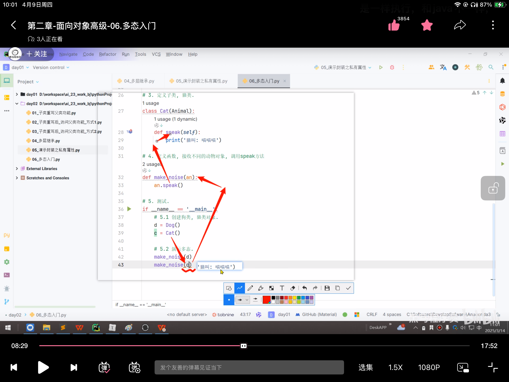
"""
06案例: 演示多态入门.
案例:
动物类案例.
"""
# 1.定义动物类
class Animal: ## 抽象类(也叫: 接口)
def speak(self): ## 抽象方法
pass
# 2. 定义子类, 狗类.
class Dog(Animal):
def speak(self):
print('狗叫: 汪汪汪')
# 3. 定义子类, 猫类.
class Cat(Animal):
def speak(self):
print('猫叫: 喵喵喵')
## 要有继承，演示无继承的结果，！！！没报错
# 汽车类
class Car:
def speak(self):
print('车叫: 滴滴滴')
## 4. 定义函数, 接收不同的动物对象, 调用speak方法
## 如果对应的子类中没有speak方法，会调用父类的speak
## an:Animal = Dog() 表示必须是Animal的子类才能调用这个函数
## 但是python中不报错，只会提示warning
def make_noise(an:Animal):
an.speak()
# 5. 测试.
if __name__ == '__main__':
# an:Animal = Dog() # 父类引用指向子类对象.
# d:Dog = Dog() # 创建狗类对象.
# 5.1 创建狗类, 猫类对象.
d = Dog()
c = Cat()
# 5.2 演示多态.
make_noise(d)
make_noise(c)
print('-' * 34)
# 5.3 测试汽车类
c = Car()
make_noise(c) #但是没报错
"""
07案例: 演示Python的多态案例之 战斗平台.
需求:
1. 构建对战平台(公共的函数) object_play(), 接收: 英雄机 和 敌机.
2. 在不修改对战平台代码的情况下, 完成多次战斗.
3. 规则:
英雄机, 1代战斗力60, 2代战斗力80
敌机, 1代战斗力70
代码提示:
英雄机1代 HeroFighter
英雄机2代 AdvHeroFighter
敌机 EnemyFighter
"""
# 1. 定义英雄机1代, 战斗力 60
class HeroFighter:
def power(self):
return 60
# 2. 定义英雄机2代, 战斗力 80
class AdvHeroFighter(HeroFighter):
def power(self):
return 80
# 3. 敌机1代
class EnemyFighter:
def power(self):
return 70
## 4. 构建对战平台, 公共的函数, 接收不同的参数, 有不同的效果 -> 多态.
# def object_play(hero: HeroFighter, enemy:EnemyFighter):
def object_play(hero, enemy):
# 参1: 英雄机, 参2: 敌机
if hero.power() >= enemy.power():
print('英雄机 战胜 敌机!')
else:
print('英雄机 惜败 敌机!')
# 5. 测试.
if __name__ == '__main__':
# 思路1: 不使用多态, 完成对战.
# # 场景1: 英雄机1代 vs 敌机1代
# h1 = HeroFighter()
# e1 = EnemyFighter()
# if h1.power() >= e1.power():
# print('英雄机1代 战胜 敌机1代')
# else:
# print('英雄机1代 惜败 敌机1代')
# print('-' * 34)
# # 场景2: 英雄机2代 vs 敌机1代
# h2 = AdvHeroFighter()
# e1 = EnemyFighter()
# if h2.power() >= e1.power():
# print('英雄机2代 战胜 敌机1代')
# else:
# print('英雄机2代 惜败 敌机1代')
# print('*' * 34)
# 思路2: 使用多态, 完成对战.
h1 = HeroFighter()
h2 = AdvHeroFighter()
e1 = EnemyFighter()
# 场景1: 英雄机1代 vs 敌机1代
object_play(h1, e1)
print('-' * 34)
# 场景2: 英雄机2代 vs 敌机1代
object_play(h2, e1)
# object_play(h2, h1) # 还是不会报错的，只会报警告
抽象类：
"""
08案例: 演示抽象类的用法.
"""
# 1. 定义抽象类, 空调类, 设定: 空调的规则.
class AC:
# 1.1 制冷
def cool_wind(self):
pass
# 1.2 制热
def hot_wind(self):
pass
# 1.3 左右摆风
def swing_l_r(self):
pass
# 2. 定义子类(小米空调), 实现父类(空调类)中的所有抽象方法.
class XiaoMi(AC):
# 2.1 制冷
def cool_wind(self):
print('小米 核心 制冷技术!')
# 2.2 制热
def hot_wind(self):
print('小米 核心 制热技术!')
# 2.3 左右摆风
def swing_l_r(self):
print('小米空调 静音左右摆风 技术!')
# 3. 定义子类(格力空调), 实现父类(空调类)中的所有抽象方法.
class Gree(AC):
# 3.1 制冷
def cool_wind(self):
print('格力 核心 制冷技术!')
# 3.2 制热
def hot_wind(self):
print('格力 核心 制热技术!')
# 3.3 左右摆风
def swing_l_r(self):
print('格力空调 低频左右摆风 技术!')
# 4. 测试
if __name__ == '__main__':
# 4.1 小米空调
xm = XiaoMi()
xm.cool_wind()
xm.hot_wind()
xm.swing_l_r()
print('-' * 23)
# 4.2 格力空调
gree = Gree()
gree.cool_wind()
gree.hot_wind()
gree.swing_l_r()
属性:
对象属性:
定义到 __init__ 魔法方法中的属性，每个对象都有自己的内容。
通过 对象名. 的方式调用。
类属性:
定义到类中，函数外的属性(变量)，能被该类下所有的对象所 共享。
既能通过 类名. 还能通过 对象名. 的方式来调用，推荐使用 类名. 的方式。
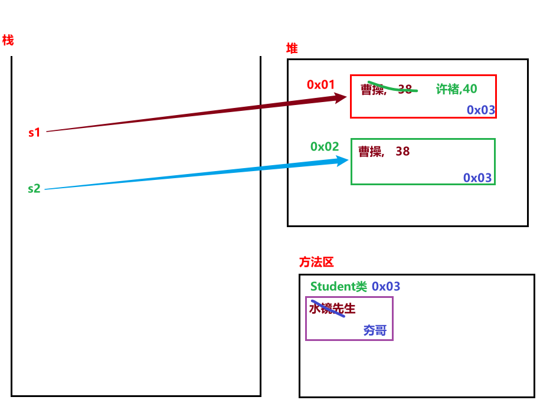
代码演示
"""
09案例: 演示对象属性 和 类属性.
"""
# 需求: 演示 对象属性 和 类属性相关.
# 1. 定义1个 Student类, 每个学生都有自己的 姓名, 年龄
class Student:
# 2. 定义类属性
teacher_name = '水镜先生'
# 3. 定义对象属性, 即: 写到 init 魔法方法中的属性.
def __init__(self, name, age):
self.name = name
self.age = age
# 4. 定义str魔法方法, 输出对象的信息.
def __str__(self):
return '姓名: %s, 年龄: %d' % (self.name, self.age)
# 5. 测试
if __name__ == '__main__':
# 场景1: 对象属性
s1 = Student('曹操', 38)
s2 = Student('曹操', 38)
# 修改s1的属性值.
s1.name = '许褚'
s1.age = 40
print(f's1: {s1}') # s1变了
print(f's2: {s2}') # s2没变
print('-' * 23)
# 场景2: 类属性
# 1. 类属性可以通过 类名. 还可以通过 对象名. 的方式调用.
print(s1.teacher_name) # 水镜先生
print(s2.teacher_name) # 水镜先生
print(Student.teacher_name) # 水镜先生
print('-' * 23)
# 2.尝试用 对象名. 的方式来修改 类属性.
# s1.teacher_name = '夯哥'
## 只能给s1增加了一个属性并赋值, 不能给类属性赋值,
# 3. 如果要修改类变量的值, 只能通过 类名. 的方式实现.
Student.teacher_name = '夯哥'
print(s1.teacher_name) # 夯哥
print(s2.teacher_name) # 夯哥
print(Student.teacher_name) # 夯哥
类方法:
属于类的方法, 可以通过 类名.类方法名 还可以通过 对象名. 的方式来调用.
定义类方法的时候, 必须使用装饰器 @classmethod, 且第1个参数必须表示 类对象.
@classmethod
def 类方法名(cls):
...
静态方法:
属于该类下所有对象所共享的方法, 可以通过 类名. 还可以通过 对象名. 的方式来调用.
定义静态方法的时候, 必须使用装饰器 @staticmethod, 且参数传不传都可以.
(有些函数虽然和类有关，但其实不依赖类和对象)
区别:
1. 类方法的第1个参数必须是 类对象, 静态方法无参数的特殊要求
2. 你可以理解为: 如果函数中要用 类对象, 就定义成类方法, 否则定义成 静态方法, 除此外, 并无任何区别.
class Student:
school = "清华大学"
def __init__(self, name):
self.name = name
def introduce(self):
print(f"我是{self.name}")
@classmethod
def show_school(cls):
print(f"学校是{cls.school}")
@staticmethod
def rule():
print("学生要遵守校规")
s = Student("小明")
s.introduce() # 我是小明
Student.show_school() # 学校是清华大学
Student.rule() # 学生要遵守校规
"""
10案例: 演示类方法和静态方法.
"""
# 1. 定义学生类.
class Student:
# 2. 定义类属性.
school = '黑马程序员'
# 3. 定义类方法
@classmethod
def show1(cls):
print(f'cls: {cls}') # <class '__main__.Student'>
print(cls.school) # 黑马程序员
print('我是类方法')
# 4. 定义静态方法
@staticmethod
def show2():
print(Student.school) # 黑马程序员
print('我是静态方法')
# 5. 测试.
if __name__ == '__main__':
s1 = Student()
s1.show1()
print('-' * 23)
s1.show2()
基本需求：
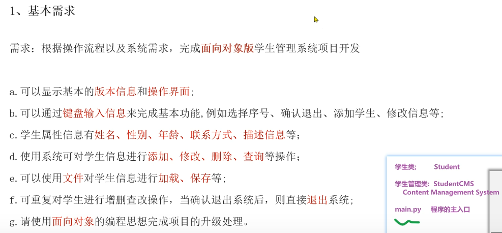
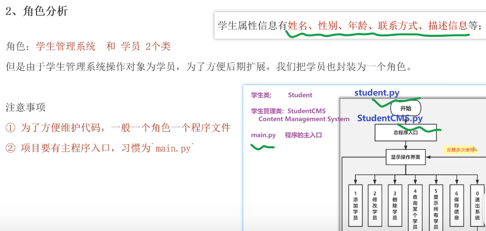
如下是写到 student.py 文件中的代码
"""
该文件用于记录 学生类, 学生的属性信息为: 姓名, 性别, 年龄, 手机号, 描述信息.
"""
# 1. 定义学生类.
class Student:
# 2. 定义魔法方法, 初始化属性信息.
def __init__(self, name, gender, age, phone, desc):
"""
该魔法方法, 用于初始化 属性信息.
:param name: 学生姓名
:param gender: 性别
:param age: 年龄
:param phone: 手机号
:param desc: 描述信息
"""
self.name = name
self.gender = gender
self.age = age
self.phone = phone
self.desc = desc
# 3. 定义魔法方法, 用于打印学生信息.
def __str__(self):
"""
该魔法方法, 用于打印学生信息.
:return:
"""
return f'姓名: {self.name}, 性别: {self.gender}, 年龄: {self.age}, 手机号: {self.phone}, 描述信息: {self.desc}'
# 4. 测试
if __name__ == '__main__':
s = Student('乔峰', '男', 38, '13112345678', '丐帮帮主')
print(s)
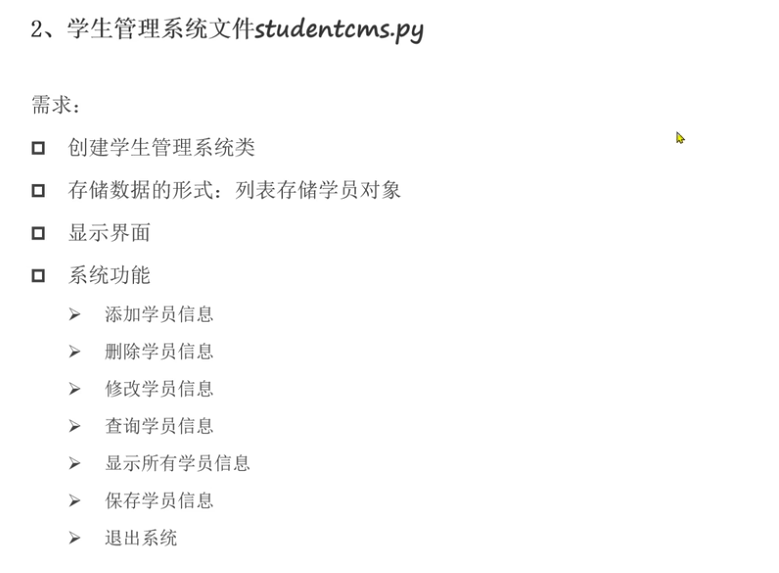
如下是写到 studentcms.py 文件中的内容.
"""
该文件用于 完成学生管理系统的 具体业务的操作, 即: 增删改查, 保存学生信息等...
"""
# 导包
from student import Student
# 1. 创建学生管理系统类.
class StudentCMS(object):
# 2. 通过魔法方法init, 初始化属性信息.
def __init__(self):
## 创建一个空列表, 用于存储学生信息.
self.stu_list = [] # [学生对象, 学生对象, 学生对象] -> [Student(...), Student(...)...]
# 3. 定义函数, 实现打印 管理系统的界面.
## \t代表缩进 print()打印空行
## 因为该函数中没有使用self, 所以可以把该函数定义为静态方法.
@staticmethod
def show_view():
print('*' * 23)
print('学生管理系统V2.0版')
print('\t1.添加学生信息')
print('\t2.删除学生信息')
print('\t3.修改学生信息')
print('\t4.查询单个学生信息')
print('\t5.查询所有学生信息')
print('\t6.保存学生信息')
print('\t0.退出系统')
print('*' * 23)
# 4. 定义函数, 实现 添加 学生信息功能.
def add_student(self):
pass
# 5. 定义函数, 实现 删除 学生信息功能.
def del_student(self):
pass
# 6. 定义函数, 实现 修改 学生信息功能.
def update_student(self):
pass
# 7. 定义函数, 实现 查询单个 学生信息功能.
def search_one_student(self):
pass
# 8. 定义函数, 实现 查询所有 学生信息功能.
def search_all_student(self):
pass
# 9. 定义函数, 实现 保存 学生信息功能.
def save_student(self):
pass
# 10. 定义函数, 实现 加载 学生信息.
def load_student(self):
pass
# 11. 定义函数, 把上述的所有业务逻辑跑通.
def start(self):
# 11.1
# 11.2 死循环, 不断的玩儿.
while True:
# 11.3
# 11.4 打印 学生管理系统的界面.
self.show_view()
# 11.5 提示用户录入要操作的编号, 并接收.
input_num = input('请输入您要操作的编号:')
# 11.6 根据用户输入的编号, 做不同的操作.
## 判断的是字符串，因为input
if input_num == '1':
# 添加学生信息
# print('添加学生信息\n')
self.add_student()
elif input_num == '2':
# 删除学生信息
print('删除学生信息\n')
self.del_student()
elif input_num == '3':
# 修改学生信息
print('修改学生信息\n')
self.update_student()
elif input_num == '4':
# 查询单个学生信息
print('查询单个学生信息\n')
self.search_one_student()
elif input_num == '5':
# 查询所有学生信息
print('查询所有学生信息\n')
self.search_all_student()
elif input_num == '6':
# 保存学生信息
print('保存学生信息\n')
self.save_student()
elif input_num == '0':
# 退出系统, 做二次校验.
result = input('您确定要退出吗? (Y/N) -> ')
## 不确定到底大小写，那就转为小写再判断
if result.lower() == 'y': # 字符串的lower() -> 把字母转成小写形式.
print('谢谢您的使用, 期待下次再会!')
break
else:
# 输入错误
print('录入有误, 请重新录入!\n')
# 12. 在main中测试.
if __name__ == '__main__':
# 12.1 创建学生管理系统对象.
cms = StudentCMS()
# 12.2 调用学生管理系统对象的start()函数, 启动学生管理系统.
cms.start()
如下的代码是写到 main.py 文件中的.
"""
该文件 用作程序的入口文件.
"""
from studentcms import StudentCMS
# 程序的主入口
if __name__ == '__main__':
# 1. 创建学生管理系统对象.
stu_cms = StudentCMS()
# 2. 启动程序即可.
stu_cms.start()
4. 添加学生
# 4. 定义函数, 实现添加学生信息功能.
def add_student(self):
# 4.1 提示用户输入学生信息, 并接收.
name = input('请输入学生姓名:')
gender = input('请输入学生性别:')
age = int(input('请输入学生年龄:'))
phone = input('请输入学生电话:')
desc = input('请输入学生描述信息:')
# 4.2 把上述的信息封装成学生对象.
stu = Student(name, gender, age, phone, desc)
# 4.3 把学生对象添加到列表中.
self.stu_list.append(stu)
# 4.4 提示.
print(f'添加 {name} 学生信息成功!\n')
5. 查看所有学生信息
# 8. 定义函数, 实现查询所有学生信息功能.
def search_all_student(self):
# 8.1 判断列表长度是否为0, 如果为0, 提示: 暂无学生信息, 请添加后查询.
if len(self.stu_list) == 0:
print('暂无学生信息, 请添加后查询! \n')
else:
# 8.2 如果长度不为0, 遍历列表, 打印出所有的学生信息.
for stu in self.stu_list:
print(stu)
print() # 为了格式好看, 加个换行.
5. 删除学生信息
# 5. 定义函数, 实现删除学生信息功能.
def del_student(self):
# 5.1 提示用户输入要删除的学生的姓名, 并接收.
del_name = input('请输入要删除的学生姓名:')
# 5.2 遍历对象列表, 找到要删除的学生, 并删除.
for stu in self.stu_list:
# 5.3 如果当前学生的姓名 和 要删除的学生相同, 就删除该学生信息
if stu.name == del_name:
self.stu_list.remove(stu)
print(f'学员 {del_name} 信息删除成功!\n')
break
else:
# 走到这里, 说明没有走break, 即: 没有找到这个学生.
print('查无此人, 请检查后重新删除!\n')
6. 修改学生信息
# 6. 定义函数, 实现修改学生信息功能.
def update_student(self):
# 6.1 提示用户输入要修改的学生的姓名, 并接收.
upd_name = input('请输入要修改的学生姓名:')
# 6.2 遍历列表, 找到要修改的学生, 并修改.
for stu in self.stu_list:
# 6.3 如果当前学生的姓名 和 要修改的学生相同, 就修改该学生信息
if stu.name == upd_name:
# 6.4 提示用户录入该学员新的信息.
stu.gender = input('请录入修改后的性别: ')
stu.age = int(input('请录入修改后的年龄: '))
stu.phone = input('请录入修改后的电话: ')
stu.desc = input('请录入修改后的描述信息: ')
print(f'学员 {upd_name} 信息修改成功!\n')
break
else:
# 走到这里, 说明没有走break, 即: 没有找到这个学生.
print('查无此人, 请检查后重新操作!\n')
7. 查询单个学生信息
# 7. 定义函数, 实现查询单个学生信息功能.
def search_one_student(self):
# 7.1 提示用户输入要查找的学生的姓名, 并接收.
search_name = input('请输入要查找的学生姓名:')
# 7.2 遍历列表, 找到要查找的学生, 并打印信息.
for stu in self.stu_list:
# 7.3 如果当前学生的姓名 和 要查找的学生相同, 就打印该学生信息
if stu.name == search_name:
print(stu, end='\n\n')
break
else:
# 走到这里, 说明没有走break, 即: 没有找到这个学生.
print('查无此人, 请检查后重新操作!\n')
__dict__属性——对象和字典的转化__dict__ 属性介绍:
它是Python内置的属性, 可以把 对象 转成 字典 形式.
"""
案例: 演示Python内置的dict属性.
"""
from studentcms.student import Student
# 需求1: 把 学生对象 -> 字典形式, 属性名做键, 属性值做值.
s1 = Student('德桦', '男', 81, '111', '刻骨铭心')
print(s1)
# {'name': '德桦', 'gender': '男', 'age': 81, 'phone': '111', 'desc': '刻骨铭心'}
my_dict = s1.__dict__
print(my_dict)
print(type(my_dict)) # 字典格式
print('-' * 23)
# 需求2: 把 [学生对象, 学生对象, 学生对象] -> [字典, 字典, 字典]
s1 = Student('德桦', '男', 81, '111', '刻骨铭心')
s2 = Student('志奇', '男', 22, '222', '我不是紫琦')
s3 = Student('紫琦', '男', 66, '333', '有请志奇')
stu_list = [s1, s2, s3] # 直接打印是地址值
## 列表推导式.
list_dict = [stu.__dict__ for stu in stu_list]
print(list_dict)
print('-' * 23)
# 需求3: 把 {'name': '德桦', 'gender': '男', 'age': 81, 'phone': '111', 'desc': '刻骨铭心'} -> 学生对象
my_dict = {'name': '德桦', 'gender': '男', 'age': 81, 'phone': '111', 'desc': '刻骨铭心'}
s5 = Student(my_dict['name'], my_dict['gender'], my_dict['age'], my_dict['phone'], my_dict['desc'])
print(s5)
print(type(s5))
print('-' * 23)
s6 = Student(**my_dict) # 效果同上
## func(**dict) 将字典键值对作为参数传给函数，字典的键必须和函数参数相同，否则报错
print(s6)
print(type(s6))
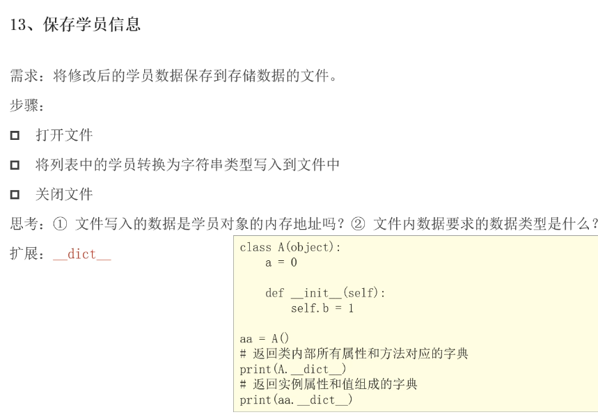
# 9. 定义函数, 实现保存学生信息功能.
def save_student(self):
# 9.1 关联 学生信息文件.
with open('./python/python进阶/studentcms/stu_data.txt', 'w', encoding='utf-8') as dest_f:
## dest_f表示用它来操作文件
# 9.2 把 [学生对象, 学生对象...] -> [字典, 字典...]
stu_dict = [stu.__dict__ for stu in self.stu_list]
# 9.3 把字典列表, 持久化到文件中.
dest_f.write(str(stu_dict))
## 记得转成字符串再写入.
# 10. 定义函数, 实现加载学生信息.
def load_student(self):
# 10.1 加入异常处理, 有可能文件不存在.
try:
# 10.2 关联学生信息文件.
with open('./python/python进阶/studentcms/stu_data.txt', 'r', encoding='utf-8') as src_f:
# 10.3 一次性读取所有数据.
stu_data = src_f.read() # 字符串'[字典, 字典...]'
# 10.4 把上述的字符串, 转为列表.
stu_list = eval(stu_data)
## 先去掉字符串的单引号''
## ！# 10.5 判断如果列表为空, 就赋予空列表.
if len(stu_list) == 0:
stu_list = []
# 10.6 把stu_list(列表套字典) 转成 [学生对象, 学生对象...], 并赋值给 self.stu_list
self.stu_list = [Student(**stu_dict) for stu_dict in stu_list]
except:
# 10.7 走这里, 说明目的地文件不存在, 创建即可.
with open('./python/python进阶/studentcms/stu_data.txt', 'w', encoding='utf-8') as src_f:
pass
student.py 文件中的代码
"""
该文件用于记录 学生类, 学生的属性信息为: 姓名, 性别, 年龄, 手机号, 描述信息.
"""
# 1. 定义学生类.
class Student:
# 2. 定义魔法方法, 初始化属性信息.
def __init__(self, name, gender, age, phone, desc):
"""
该魔法方法, 用于初始化 属性信息.
:param name: 学生姓名
:param gender: 性别
:param age: 年龄
:param phone: 手机号
:param desc:
"""
self.name = name
self.gender = gender
self.age = age
self.phone = phone
self.desc = desc
# 3. 定义魔法方法, 用于打印学生信息.
def __str__(self):
"""
该魔法方法, 用于打印学生信息.
:return:
"""
return f'姓名: {self.name}, 性别: {self.gender}, 年龄: {self.age}, 手机号: {self.phone}, 描述信息: {self.desc}'
# 4. 测试
if __name__ == '__main__':
s = Student('乔峰', '男', 38, '13112345678', '丐帮帮主')
print(s)
studentcms.py 文件中的代码
"""
该文件用于 完成学生管理系统的 具体业务的操作, 即: 增删改查, 保存学生信息等...
"""
# 导包
from student import Student
import time
# 1. 创建学生管理系统类.
class StudentCMS(object):
# 2. 通过魔法方法init, 初始化属性信息.
def __init__(self):
# 创建一个空列表, 用于存储学生信息.
self.stu_list = [] # [学生对象, 学生对象, 学生对象] -> [Student(...), Student(...)...]
# self.stu_list = [
# Student('德桦', '男', 81, '111', '刻骨铭心'),
# Student('志奇', '男', 22, '222', '我不是紫琦'),
# Student('紫琦', '男', 66, '333', '有请志奇'),
# Student('冷哥', '男', 88, '444', '谁动了我的水冷'),
# Student('卷帘', '男', 52, '555', '谁动了我的大酱'),
# ]
# 3. 定义函数, 实现打印 管理系统的界面.
# 因为该函数中没有使用self, 所以可以把该函数定义为静态方法.
@staticmethod
def show_view():
print('*' * 23)
print('学生管理系统V2.0版')
print('\t1.添加学生信息')
print('\t2.删除学生信息')
print('\t3.修改学生信息')
print('\t4.查询单个学生信息')
print('\t5.查询所有学生信息')
print('\t6.保存学生信息')
print('\t0.退出系统')
print('*' * 23)
# 4. 定义函数, 实现添加学生信息功能.
def add_student(self):
# 4.1 提示用户输入学生信息, 并接收.
name = input('请输入学生姓名:')
gender = input('请输入学生性别:')
age = int(input('请输入学生年龄:'))
phone = input('请输入学生电话:')
desc = input('请输入学生描述信息:')
# 4.2 把上述的信息封装成学生对象.
stu = Student(name, gender, age, phone, desc)
# 4.3 把学生对象添加到列表中.
self.stu_list.append(stu)
# 4.4 提示.
print(f'添加 {name} 学生信息成功!\n')
# 5. 定义函数, 实现删除学生信息功能.
def del_student(self):
# 5.1 提示用户输入要删除的学生的姓名, 并接收.
del_name = input('请输入要删除的学生姓名:')
# 5.2 遍历列表, 找到要删除的学生, 并删除.
for stu in self.stu_list:
# 5.3 如果当前学生的姓名 和 要删除的学生相同, 就删除该学生信息
if stu.name == del_name:
self.stu_list.remove(stu)
print(f'学员 {del_name} 信息删除成功!\n')
break
else:
# 走到这里, 说明没有走break, 即: 没有找到这个学生.
print('查无此人, 请检查后重新删除!\n')
# 6. 定义函数, 实现修改学生信息功能.
def update_student(self):
# 6.1 提示用户输入要修改的学生的姓名, 并接收.
upd_name = input('请输入要修改的学生姓名:')
# 6.2 遍历列表, 找到要修改的学生, 并修改.
for stu in self.stu_list:
# 6.3 如果当前学生的姓名 和 要修改的学生相同, 就修改该学生信息
if stu.name == upd_name:
# 6.4 提示用户录入该学员新的信息.
stu.gender = input('请录入修改后的性别: ')
stu.age = int(input('请录入修改后的年龄: '))
stu.phone = input('请录入修改后的电话: ')
stu.desc = input('请录入修改后的描述信息: ')
print(f'学员 {upd_name} 信息修改成功!\n')
break
else:
# 走到这里, 说明没有走break, 即: 没有找到这个学生.
print('查无此人, 请检查后重新操作!\n')
# 7. 定义函数, 实现查询单个学生信息功能.
def search_one_student(self):
# 7.1 提示用户输入要查找的学生的姓名, 并接收.
search_name = input('请输入要查找的学生姓名:')
# 7.2 遍历列表, 找到要查找的学生, 并打印信息.
for stu in self.stu_list:
# 7.3 如果当前学生的姓名 和 要查找的学生相同, 就打印该学生信息
if stu.name == search_name:
print(stu, end='\n\n')
break
else:
# 走到这里, 说明没有走break, 即: 没有找到这个学生.
print('查无此人, 请检查后重新操作!\n')
# 8. 定义函数, 实现查询所有学生信息功能.
def search_all_student(self):
# 8.1 判断列表长度是否为0, 如果为0, 提示: 暂无学生信息, 请添加后查询.
if len(self.stu_list) == 0:
print('暂无学生信息, 请添加后查询! \n')
else:
# 8.2 如果长度不为0, 遍历列表, 打印出所有的学生信息.
for stu in self.stu_list:
print(stu)
print() # 为了格式好看, 加个换行.
# 9. 定义函数, 实现保存学生信息功能.
def save_student(self):
# 9.1 关联 学生信息文件.
with open('./stu_data.txt', 'w', encoding='utf-8') as dest_f:
# 9.2 把 [学生对象, 学生对象...] -> [字典, 字典...]
stu_dict = [stu.__dict__ for stu in self.stu_list]
# 9.3 把字典列表, 持久化到文件中.
dest_f.write(str(stu_dict)) # 记得转成字符串再写入.
# 10. 定义函数, 实现加载学生信息.
def load_student(self):
# 10.1 加入异常处理, 有可能文件不存在.
try:
# 10.2 关联学生信息文件.
with open('./stu_data.txt', 'r', encoding='utf-8') as src_f:
# 10.3 一次性读取所有数据.
stu_data = src_f.read() # '[字典, 字典...]'
# 10.4 把上述的字符串, 转为列表.
stu_list = eval(stu_data) # ''
# 10.5 判断如果列表为空, 就赋予空列表.
if len(stu_list) == 0:
stu_list = []
# 10.6 把stu_list(列表套字典) 转成 [学生对象, 学生对象...], 并赋值给 self.stu_list
self.stu_list = [Student(**stu_dict) for stu_dict in stu_list]
except:
# 10.7 走这里, 说明目的地文件不存在, 创建即可.
with open('./stu_data.txt', 'w', encoding='utf-8') as src_f:
pass
# 11. 定义函数, 把上述的所有业务逻辑跑通.
def start(self):
# 11.1 加载学生信息.
self.load_student()
# 11.2 死循环, 不断的玩儿.
while True:
# 11.3 为了效果更明显, 加入: 延迟(休眠线程)
time.sleep(1)
# 11.4 打印 学生管理系统的界面.
StudentCMS.show_view()
# 11.5 提示用户录入要操作的编号, 并接收.
input_num = input('请输入您要操作的编号:')
# 11.6 根据用户输入的编号, 做不同的操作.
if input_num == '1':
# 添加学生信息
# print('添加学生信息\n')
self.add_student()
elif input_num == '2':
# 删除学生信息
# print('删除学生信息\n')
self.del_student()
elif input_num == '3':
# 修改学生信息
# print('修改学生信息\n')
self.update_student()
elif input_num == '4':
# 查询单个学生信息
# print('查询单个学生信息\n')
self.search_one_student()
elif input_num == '5':
# 查询所有学生信息
# print('查询所有学生信息\n')
self.search_all_student()
elif input_num == '6':
# 保存学生信息
self.save_student()
print('保存学生信息成功!\n')
elif input_num == '0':
# 退出系统, 做二次校验.
result = input('您确定要退出吗? (Y/N) -> ')
if result.lower() == 'y': # 字符串的lower() -> 把字母转成小写形式.
# 在退出前, 自动保存学生数据到文件.
self.save_student()
print('谢谢您的使用, 期待下次再会!')
break
else:
# 输入错误
print('录入有误, 请重新录入!\n')
# 12. 在main中测试.
if __name__ == '__main__':
# 12.1 创建学生管理系统对象.
cms = StudentCMS()
# 12.2 调用学生管理系统对象的start()函数, 启动学生管理系统.
cms.start()
# import os
# print(os.getcwd())
main.py 文件中的代码
"""
该文件 用作程序的入口文件.
"""
from studentcms import StudentCMS
# 程序的主入口
if __name__ == '__main__':
# 1. 创建学生管理系统对象.
stu_cms = StudentCMS()
# 2. 启动程序即可.
stu_cms.start()
装饰器就是闭包的一种应用。
"""
01案例: 闭包背景介绍
案例目的:
引出来 闭包 相关的知识点.
"""
# 需求: 定义函数保存变量10, 调用函数返回值 并 重复累加数值, 观察结果.
# 1. 定义函数, 保存变量10
def func():
num = 10
return num
# 2. 调用函数, 获取返回值.
num = func()
print(num + 1) # 11
print(num + 1) # 11
print(num + 1) # 11
闭包
在函数嵌套的前提下, 内部函数使用了外部函数的变量, 并且外部函数返回了内部函数。
使用外部函数 变量 的内部函数称为闭包.
def 外部函数名(形参列表):
外部函数的(局部)变量
def 内部函数名(形参列表):
使用外部函数的变量
return 内部函数名
- 有嵌套：外部函数嵌套内部函数
- 有引用：内部函数使用外部函数的变量
- 有返回：外部函数中, 返回 内部函数名(对象) 【细节： 函数名 和 函数名() 是两个概念, 前者表示 函数对象, 后者表示 调用函数, 获取返回值.】
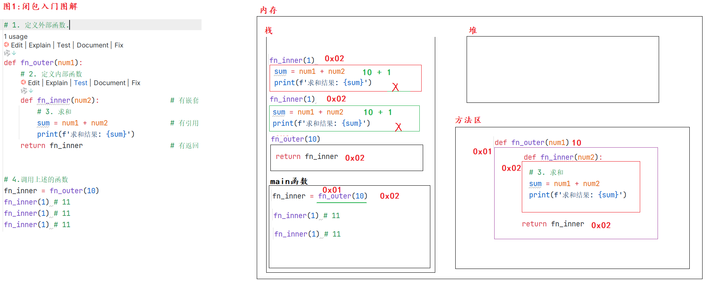
"""
02案例: 闭包入门.
"""
# 案例1: 函数名 -> 是对象
def get_sum(a, b):
return a + b
print(get_sum)
# <function get_sum at 0x000001B4AC3DD800>, 对象.
print(get_sum(10, 20)) # 调用函数, 获取返回值.
## 函数名可以赋值给变量, 这个变量就是: 函数对象.
my_sum = get_sum
print(my_sum)
# <function get_sum at 0x00000251CE53D800>
print(my_sum(100, 200)) # 300
print('-' * 23)
# 案例2: 演示闭包写法.
# 需求: 定义求和的闭包, 外部函数有参数num1, 内部函数有参数num2, 调用, 求解两数之和, 观察结果.
# 1. 定义外部函数.
def fn_outer(num1):
# 2. 定义内部函数
def fn_inner(num2): # 有嵌套
# 3. 求和
sum = num1 - num2 # 有引用
print(f'作差结果: {sum}')
return fn_inner # 有返回
# 4.调用上述的函数
f = fn_outer(10) # 把对象赋给fn_inner
f(20) # -10
print('-' * 23)
fn_outer(100)(200) # -100
nonlocal:
它是Python内置的关键字, 可以实现 在内部函数中 修改外部函数的 变量值.
（不能修改但是可以打印）
图解

代码
"""
03案例: nonlocal关键字介绍
"""
# 需求: 编写1个闭包,让内部函数访问外部函数的参数 a = 100, 并观察结果.
# 1. 定义外部函数.
def fn_outer():
# 2.定义外部函数的(局部)变量
a = 100
# 3.定义内部函数, 访问外部函数的变量.
def fn_inner():
# 4.在内部函数中修改外部函数的变量
nonlocal a
## nonlocal: 可以实现在内部函数中修改外部函数的变量值.
a = a + 1
# 5. 打印外部函数的变量
print(f'a: {a}')
# 6. 返回 内部函数名(对象)
return fn_inner
# 7.测试
if __name__ == '__main__':
fn_inner = fn_outer()
fn_inner() # 101
fn_inner() # 102
fn_inner() # 103
装饰器介绍:
格式1: 传统写法
装饰后的函数名 = 装饰器名(被装饰的原函数名) 装饰后的函数名()
其中，装饰后的函数名是自己命名的。
弊端： 若和原函数名一样，被装饰的原函数就没办法再用了！
格式2: 语法糖 （最常用）
在要被装饰的原函数上一行, 直接写
@装饰器名, 之后直接调用原函数即可.
语法糖写法中，装饰器要写在被定义的函数之前。
图解
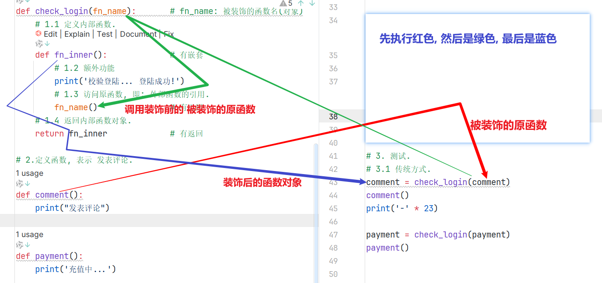
代码
"""
04案例: 装饰器入门.
"""
# 需求: 在发表评论前, 都是需要先登录的.
# 1.定义外部函数, 形参列表接收 要被装饰的函数名(对象)
def check_login(fn_name): # fn_name: 被装饰的函数名(对象)
# 1.1 定义内部函数.
def fn_inner(): # 有嵌套
# 1.2 额外功能
print('校验登陆... 登陆成功!')
# 1.3 访问原函数, 即: 外部函数的引用.
fn_name() # 有外部的引用
# 1.4 返回内部函数对象.
return fn_inner # 有返回
# 2.定义函数, 表示 发表评论.
def comment():
print("发表评论")
@check_login # 底层其实是: payment = check_login(payment)
def payment():
print('充值中...')
# 3. 测试.
# 3.1 传统方式.
comment = check_login(comment)
comment()
print('-' * 23)
# 3.2 语法糖
# payment = check_login(payment)
# payment()
payment()
场景1: ==无参无返回值的原函数==
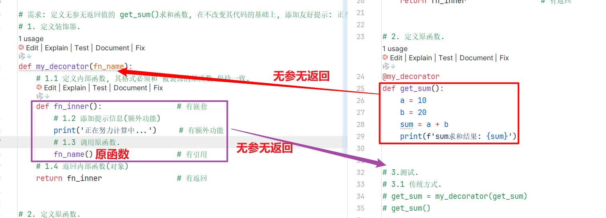
"""
05案例: 装饰器装饰_无参无返回的原函数
细节:
装饰器的内部函数格式 要和 被装饰的原函数 保持一致,
即: 原函数是无参无返回的, 则 装饰器的内部函数也必须是 无 参无返回的.
原函数有参有返回的, 则 装饰器的内部函数也必须是 有参有返回的.
"""
# 需求: 定义无参无返回值的 get_sum()求和函数, 在不改变其代码的基础上, 添加友好提示: 正在努力计算中...
# 1. 定义装饰器.
def my_decorator(fn_name):
# 1.1 定义内部函数, 其格式必须和 被装饰的原函数 保持一致.
def fn_inner(): # 有嵌套
# 1.2 添加提示信息(额外功能)
print('正在努力计算中...') # 有额外功能
# 1.3 调用原函数.
fn_name() # 有引用
# 1.4 返回内部函数(对象)
return fn_inner # 有返回
# 2. 定义原函数.
@my_decorator
def get_sum():
a = 10
b = 20
sum = a + b
print(f'sum求和结果: {sum}')
# 3.测试.
# 3.1 传统方式.
# get_sum = my_decorator(get_sum)
# get_sum()
# 3.2 语法糖.
get_sum()
场景2: ==有参无返回值的原函数==
"""
06案例: 装饰器装饰_有参无返回的原函数
细节:
装饰器的内部函数格式 要和 被装饰的原函数 保持一致,
即: 原函数是无参无返回的, 则 装饰器的内部函数也必须是 无参无返回的.
原函数有参有返回的, 则 装饰器的内部函数也必须是 有参有返回的.
"""
# 需求: 定义有参无返回值的 get_sum()求和函数, 在不改变其代码的基础上, 添加友好提示: 正在努力计算中...
# 1. 定义装饰器.
def my_decorator(fn_name):
# 1.1 定义内部函数
def fn_inner(x, y):
# 1.2 额外功能
print('正在努力计算中...')
# 1.3 调用原函数.
fn_name(x, y)
# 1.4 返回内部函数.
return fn_inner
# 2. 定义原函数, 有参无返回值.
@my_decorator
def get_sum(a, b):
sum = a + b
print(f'sum求和结果: {sum}')
# 3.测试.
# 3.1 传统方式.
# get_sum = my_decorator(get_sum)
# get_sum(10, 20)
# 3.2 语法糖.
get_sum(10, 20)
场景3: ==无参有返回值的原函数==
"""
07案例: 装饰器装饰_无参有返回的原函数
"""
# 需求: 定义无参有返回值的 get_sum()求和函数, 在不改变其代码的基础上, 添加友好提示: 正在努力计算中...
# 1. 定义装饰器.
def my_decorator(fn_name): # fn_name: 被装饰的原函数名
# 1.1 定义内部函数.
def fn_inner():
# 1.2 额外功能
print('正在努力计算中...')
# 1.3 有引用.
return fn_name() # 返回内部函数的执行结果
# 1.4 有返回, 把 内部函数对象 作为外部函数的执行结果进行返回.
return fn_inner
# 2. 定义原函数(即:要被装饰的函数)
def get_sum():
a = 11
b = 22
return a + b
# 3. 测试
# 3.1 传统写法.
get_sum = my_decorator(get_sum) # 本质 get_sum = fn_inner
sum = get_sum()
print(f'求和结果: {sum}')
"""
08案例: 装饰器装饰_有参有返回的原函数
"""
# 需求: 定义有参有返回值的 get_sum()求和函数, 在不改变其代码的基础上, 添加友好提示: 正在努力计算中...
# 1. 定义装饰器.
def my_decorator(fn_name): # fn_name: 被装饰的原函数名
# 1.1 定义内部函数.
def fn_inner(x, y):
# 1.2 额外功能
print('正在努力计算中...')
# 1.3 有引用.
return fn_name(x, y)
# 1.4 有返回, 把 内部函数对象 作为外部函数的执行结果进行返回.
return fn_inner
# 2. 定义原函数(即:要被装饰的函数)
@my_decorator
def get_sum(a, b):
return a + b
# 3. 测试
# 3.1 传统写法.
# get_sum = my_decorator(get_sum)
# sum = get_sum(10, 20)
# print(f'求和结果: {sum}')
# 3.2 装饰器写法.
print(get_sum(10, 20))
"""
09案例: 装饰器装饰_可变参数
"""
# 需求: 定义1个可以计算多个数据和字典value值和的函数, 并给其友好提示.
# 1. 定义装饰器.
def my_decorator(fn_name):
# 1.1 定义内部函数.
def fn_inner(*args, **kwargs):
# 1.2 额外功能.
print("正在努力计算中...")
# 1.3 调用原函数.
return fn_name(*args, **kwargs)
# 1.4 返回内部函数对象.
return fn_inner
# 2. 定义原函数.
@my_decorator
def get_sum(*args, **kwargs):
"""
该函数用于计算 数字元组 和 字典value值 之和.
:param args: 数字元组, *args -> 接收所有的位置参数, 封装到 元组
:param kwargs: 字典, 键是字符串, 值是数字, **kwargs -> 接收所有的关键字参数, 封装到 字典
:return: 结果之和.
"""
# 2.1 定义求和变量.
sum = 0
# 2.2 遍历元组, 获取每个元素, 求和.
for i in args:
sum += i
# 2.3 遍历字典, 获取到每个值.
for v in kwargs.values():
sum += v
# 2.4 返回结果
return sum
# 上述代码可以优化如下:
# return sum(args) + sum(kwargs.values())
# 3. 测试.
sum = get_sum(1, 2, 3, a=4, b=5, c=6)
print(sum)
多个装饰器装饰一个原函数，传统写法由近及远、由内向外装饰，但如果你要是用 装饰器的写法来做, 看到的效果是: 从上往下执行的
场景6: ==多个装饰器装饰1个函数==
"""
10案例: 演示多个装饰器装饰1个函数.
"""
# 需求: 发表评论前, 需要先登录, 再验证验证码. 请用所学, 模拟该功能.
# 1. 定义装饰器, 表示: 登录
def check_login(fn_name):
# 1.1 定义内部函数.
def fn_inner():
# 1.2 额外功能
print('校验登陆!')
# 1.3 有引用.
fn_name()
# 1.4 返回内部函数.
return fn_inner
# 2. 定义装饰器, 表示: 验证验证码
def check_code(fn_name):
# 2.1 定义内部函数.
def fn_inner():
# 2.2 额外功能
print('校验验证码!')
# 2.3 有引用.
fn_name()
# 2.4 有返回
return fn_inner
# 3. 定义原函数, 表示: 发表评论
# @check_login
# @check_code
def comment():
print('发表评论')
# 4. 测试.
# 4.1 传统写法.
# comment = check_code(comment)
# comment = check_login(comment)
# comment()
cc = check_code(comment)
cl = check_login(cc)
cl()
# 4.2 语法糖
# comment()
场景7: ==1个装饰器装饰多个函数== （装饰器再包裹一层）
"""
11案例: 演示 带参数的装饰器.
"""
# 需求: 定义1个既能装饰减法, 又能装饰加法的装饰器 -> 即: 带有参数的装饰器.
# 1. 定义装饰器.
# fn_name: 原函数名. flag: 标记
# 语法糖报错, 装饰器的参数只能有1个.
# def my_decorator(fn_name, flag):
## 传统写法未报错！正常
# def my_decorator(fn_name, flag):
# def fn_inner(a, b):
# if flag == '+':
# print('正在努力计算 [加法] 中...')
# elif flag == '-':
# print('正在努力计算 [减法] 中...')
# return fn_name(a, b)
# return fn_inner
# def get_sum(a, b):
# return a + b
# def get_sub(a, b):
# return a - b
# get_sum = my_decorator(get_sum, '+')
# print(get_sum(10, 20))
# print('-' * 23)
# get_sub = my_decorator(get_sub, )
# print(get_sub(10, 5))
## 输出：
# 正在努力计算 [加法] 中...
# 30
# -----------------------
# 正在努力计算 [减法] 中...
# 5
def logging(flag):
def my_decorator(fn_name):
# 1.1 定义内部函数, 格式要和 原函数保持一致.
def fn_inner(a, b):
# 1.2 增加额外功能.
if flag == '+':
print('正在努力计算 [加法] 中...')
elif flag == '-':
print('正在努力计算 [减法] 中...')
# 1.3 有引用.
return fn_name(a, b)
# 1.4 有返回.
return fn_inner
# 返回 my_decorator函数.
return my_decorator
# 2. 定义原函数, 表示: 加法运算.
@logging('+')
def get_sum(a, b):
return a + b
# 3. 定义原函数, 表示: 减法运算.
@logging('-')
def get_sub(a, b):
return a - b
# 4. 测试.
print(get_sum(10, 20))
print('-' * 23)
print(get_sub(10, 5))
场景8: ==1个装饰器装饰多个函数== （优化版）
"""
12案例: 演示 带参数的装饰器优化版, 合理利用参数.
"""
# 需求: 定义1个既能装饰减法, 又能装饰加法的装饰器 -> 即: 带有参数的装饰器.
def my_decorator(fn_name):
def fn_inner(a, b):
if fn_name.__name__ == 'get_sum':
print('正在努力计算 [加法] 中...')
elif fn_name.__name__ == 'get_sub':
print('正在努力计算 [减法] 中...')
return fn_name(a, b)
return fn_inner
@my_decorator
def get_sum(a, b):
return a + b
@my_decorator
def get_sub(a, b):
return a - b
print(get_sum(10, 20))
print('-' * 23)
print(get_sub(10, 5))
不可变对象：一旦创建就不可修改的对象，包括字符串、元组、数值类型（整型、浮点型）
该对象所指向的内存中的值不能被改变。当改变某个变量时，由于其所指的值不能被改变，相当于把原来的值复制一份后再改变，这会开辟一个新的地址，变量再指向这个新的地址。
可变对象：可以修改的对象，包括列表、字典、集合
该对象所指向的内存中的值可以被改变。变量（准确说是引用）改变后，实际上是所指的值直接发生改变，并没有发生复制行为，也没有开辟新的地址，通俗点说就是原地改变。
python解释器干的事：
a = 'python'
总结:
深浅拷贝分别拷贝可变和不可变
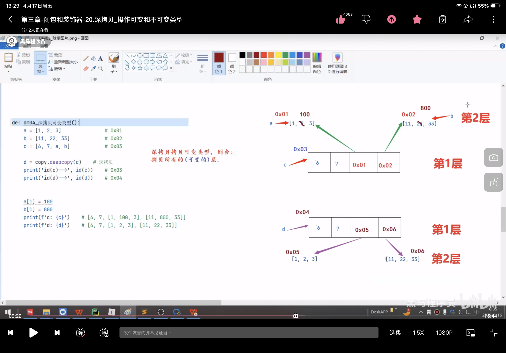
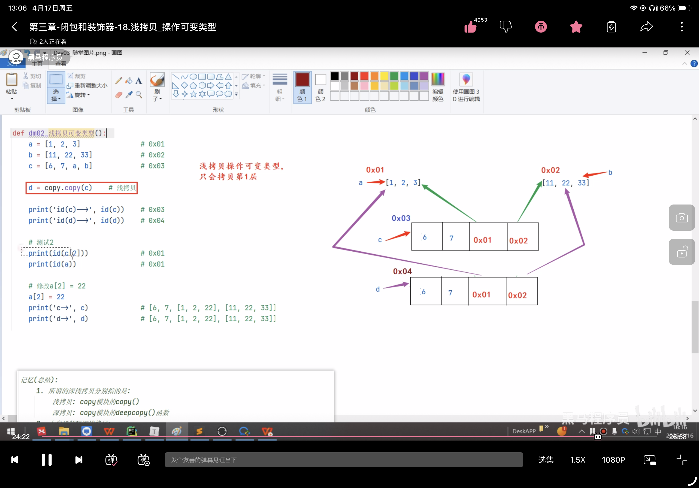
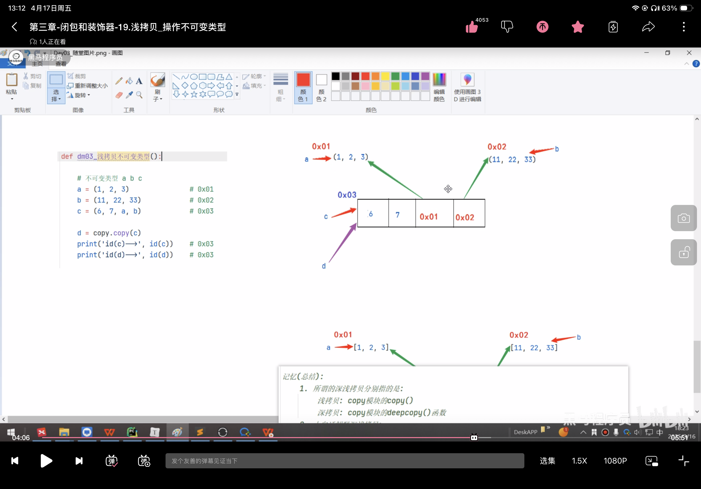

"""
13案例: 深浅拷贝.
"""
# 导包
import copy
# python的赋值操作属于引用赋值(eg:b是a的别名, 形参是实参的别名)
def dm01_普通赋值():
# 普通赋值之 不可变类型
a = 10
b = a
print('id(a)-->', id(a)) # 0x01
print('id(b)-->', id(b)) # 0x01
print('id(10)-->', id(10)) # 0x01
# 普通赋值之 可变类型
a = [1, 2, 3]
b = [11, 22, 33]
c = [a, b]
d = c
print('id(c)-->', id(c)) # 0x02
print('id(d)-->', id(d)) # 0x02
# 浅拷贝可变类型: 只拷贝第1层数据, 深层次数据不拷贝
def dm02_浅拷贝可变类型():
a = [1, 2, 3] # 0x01
b = [11, 22, 33] # 0x02
c = [6, 7, a, b] # 0x03
d = copy.copy(c) # 浅拷贝
print('id(c)-->', id(c)) # 0x03
print('id(d)-->', id(d)) # 0x04
# 测试2
print(id(c[2])) # 0x01
print(id(a)) # 0x01
# 修改a[2] = 22
a[2] = 22
print('c->', c) # [6, 7, [1, 2, 22], [11, 22, 33]]
print('d->', d) # [6, 7, [1, 2, 22], [11, 22, 33]]
## 如果改了c[1]不会影响d，本质是浅拷贝不可变
# 浅拷贝不可变类型: 不会给拷贝的对象c开辟新的内存空间, 而只是拷贝了这个对象的引用
def dm03_浅拷贝不可变类型():
# 不可变类型 a b c
a = (1, 2, 3) # 0x01
b = (11, 22, 33) # 0x02
c = (6, 7, a, b) # 0x03
d = copy.copy(c)
print('id(c)-->', id(c)) # 0x03
print('id(d)-->', id(d)) # 0x03
# 深拷贝可变类型: 若为 可变类型 开辟新的内存空间,所有层都会深拷贝
# 作用: 能保证数据的安全
def dm04_深拷贝可变类型():
a = [1, 2, 3] # 0x01
b = [11, 22, 33] # 0x02
c = [6, 7, a, b] # 0x03
d = copy.deepcopy(c) # 深拷贝
print('id(c)-->', id(c)) # 0x03
print('id(d)-->', id(d)) # 0x04
a[1] = 100
b[1] = 800
print(f'c: {c}') # [6, 7, [1, 100, 3], [11, 800, 33]]
print(f'd: {d}') # [6, 7, [1, 2, 3], [11, 22, 33]]
print('id(c[2])-->', id(c[2])) ##0x01 与a的ID一样
print('id(d[2])-->', id(d[2])) ##0x05
# 深拷贝不可变类型: 若为不可变类型直接就引用了, 不开辟新的内存空间
def dm05_深拷贝不可变类型():
a = (1, 2, 3) # 0x01
b = (11, 22, 33) # 0x02
c = (6, 7, a, b) # 0x03
d = copy.deepcopy(c)
print(id(c)) # 0x03
print(id(d)) # 0x03
# 在main函数中测试
if __name__ == '__main__':
# dm01_普通赋值()
# dm02_浅拷贝可变类型() # 多看看
# dm03_浅拷贝不可变类型()
# dm04_深拷贝可变类型() # 多看看
dm05_深拷贝不可变类型()
迭代器：python中的一种对象，用于在数据集合中逐个访问元素，而不需要暴露数据集合的底层实现，它提供了一种遍历集合元素的标准方式，适用于任何支持迭代的数据结构，如列表、元组等，range()就是一个迭代器。
__iter__() 和 __next__() 方法, 就可以称为 迭代器."""
05案例: 演示自定义迭代器.
回顾: for循环格式
for i in 可迭代类型:
pass
"""
# 需求: 模拟range(1, 6), 自定义 迭代器实现同等逻辑.
# 场景1: 回顾 range()用法.
for i in range(1, 6):
print(i)
print('-' * 23)
# 场景2: 自定义迭代器.
# 1. 自定义 迭代器类.
class MyIterator:
# 2. 通过init魔法方法, 初始化属性, 指定: 范围.
def __init__(self, start, end):
self.current_value = start # 当前值, 默认为 开始值.
self.end = end # 结束值.
# 3. 重写iterator魔法方法, 返回当前对象(即: 迭代器对象).
def __iter__(self):
return self
# 4. 重写next魔法方法, 返回当前值, 并更新当前值.
def __next__(self):
# 4.1 判断当前值范围是否合法.
if self.current_value >= self.end:
raise StopIteration # 抛出异常, 迭代结束.
# 4.2 走这里, 说明当前值合法, 返回当前值, 并更新当前值.
# value = self.current_value # value = 1 2 3 4 5
# self.current_value += 1 # self.current_value = 2 3 4 5 6
# return value # 1 2 3 4 5
# 效果同上, 代码更简单
self.current_value += 1 # self.current_value = 2 3 4 5 6
return self.current_value - 1 # 1 2 3 4 5
# 5. 创建迭代器对象, 并遍历.
# 5.1 for循环
for i in MyIterator(1, 6):
print(i)
print('-' * 23)
# 5.2 next()函数
my_itr = MyIterator(10, 13)
print(next(my_itr)) # 10
print(next(my_itr)) # 11
print(next(my_itr)) # 12
# print(next(my_itr)) # raise StopIteration # 抛出异常, 迭代结束.
生成器介绍:
概述:
根据程序员制定的规则循环生成数据，当条件不成立时则生成数据结束。数据不是一次性全部生成出来，而是使用一个，再生成一个
目的:
可以节省大量的内存.
实现方式:
1. 推导式写法.
2. yield关键字
06案例: 推导式写法
"""
案例: 演示生成器之 推导式写法.
"""
import sys # system: 系统模块
# 场景1: 生成器 推导式写法.
# 需求1: 生成1 ~ 10之间的整数.
my_generator = (i for i in range(1, 11))
## 没有元组推导式的概念，本质是一个生成器
print(my_generator)
print(type(my_generator)) # <class 'generator'>
print('-' * 23)
# 需求2: 生成 1 ~ 10 之间的偶数.
my_gt2 = (i for i in range(1, 11) if i % 2 == 0)
print(my_gt2)
print('-' * 23)
# 需求3: 如何从生成器中获取数据.
# 思路1: next()
print(next(my_gt2)) # 2
print(next(my_gt2)) # 4
print('*' * 23)
for i in my_gt2:
print(i) # 6, 8, 10
print('-' * 23)
# 验证 生成器的目的 就是可以减少内存占用.
## 如果数很小的话，反而是生成器所占内存大
my_list = [i for i in range(1000000)]
my_gt3 = (i for i in range(1000000))
print(type(my_list), type(my_gt3))
# 一个是列表，一个是生成器
# 查看my_list的内存空间占用.
print(f'my_list的内存占用: {sys.getsizeof(my_list)}') # 89095160
print(f'my_gt3的内存占用: {sys.getsizeof(my_gt3)}') # 192
print('-' * 23)
yield关键字写法07案例: yield关键字
定义函数时，里面有yield关键字，那么就是生成器。
# yield在这里做了三件事儿:
# 1.创建生成器对象.
# 2.把值存储到生成器中.
# 3.返回生成器.
for i in range(1, 11):
yield i
"""
07案例: 演示生成器之 推导式写法.
"""
# 需求: 通过yield方式, 获取到生成器之 1 ~ 10之间的整数.
# 回顾: 推导式写法.
my_g = (i for i in range(1, 11))
# yield方式如下.
# 1.定义函数, 存储到生成器中, 并返回.
def my_fun():
# my_list = [] # 创建
# for i in range(1, 11):
# my_list.append(i) # 添加
# return my_list # 返回
# 效果类似于上边的代码.
# yield在这里做了三件事儿: 1.创建生成器对象. 2.把值存储到生成器中. 3.返回生成器.
for i in range(1, 11):
yield i
# 2.测试.
my_g2 = my_fun()
print(type(my_g2)) # <class 'generator'>
print(next(my_g2))
print(next(my_g2))
print('-' * 23)
for i in my_g2:
print(i)
08案例: 批量歌词
"""
08案例: 基于传入的数值(每批次的歌词条数), 创建 生成器, 生成批次歌词.
"""
import math
# 需求: 基于文件中 周杰伦的歌词, 创建生成器, 根据传入的每批次的歌词条数, 生成歌词批次.
# 1. 定义函数, 接收 每批次的歌词条数, 返回生成器.
def dataset_loader(batch_size): # 假设是 8条/批次
"""
自定义的 歌词 批量生成器
:param batch_size: 每批次的歌词条数
:return: 生成器, 每个元素都是一批次的数据, 例如: (8条, 8条, 8条...)
"""
# 1.1 读取文件数据.
with open('./python/python进阶/jaychou_lyrics.txt', 'r', encoding='utf-8') as src_f:
# 1.2 一次读取所有行.
# lines = [line.strip() for line in src_f.readlines()]
lines = src_f.readlines()
# 1.3 计算批次总数, 假设: 5批
total_batch = math.ceil(len(lines) / batch_size)
# 1.4 for循环方式, 获取到每批次的数据, 放到生成器中, 并返回.
for idx in range(total_batch): # idx的值: 0, 1, 2, 3, 4
# 第1批歌词, 批次索引(idx=0), 歌词为: 第1条 ~ 第8条, 索引为: 0 ~ 7
# 第2批歌词, 批次索引(idx=1), 歌词为: 第9条 ~ 第16条, 索引为: 8 ~ 15
# 第3批歌词, 批次索引(idx=2), 歌词为: 第17条 ~ 第24条, 索引为: 16 ~ 23
yield lines[idx * batch_size : idx * batch_size + batch_size] # 第1批
# 2. 测试.
dl = dataset_loader(8)
print(next(dl)) # 第1批
print(next(dl)) # 第2批
for batch_data in dl:
print(batch_data)
property属性介绍:
property的装饰器用法:
@property 修饰 获取值的函数
@获取值的函数名.setter 修饰 设置值的函数
之后, 就可以直接 .上述的函数名 来当做变量直接用.
"""
09案例: 演示property属性的用法.
property的装饰器用法:
@property 修饰 获取值的函数
@获取值的函数名.setter 修饰 设置值的函数
之后, 就可以直接 .上述的函数名 来当做变量直接用.
"""
# 需求: 定义学生类, 私有属性 age, 通过property实现简化调用.
# 1. 定义学生类.
class Student:
# 1.1 私有属性.
def __init__(self):
self.__age = 18
# ## 旧的获取和设置的方法——封装
# def get_age(self):
# return self.__age
# def set_age(self, age):
# self.__age = age
# 1.2 提供公共的方式方式
@property
def age(self):
return self.__age
@age.setter
def age(self, age):
# 可以在这里对传入的age值做判断, 但是一般不做, 重要字段才会做判断.
# 因为实际开发中数据是从前端传过来的, 已经做过判断了, 这里做属于二次校验.
self.__age = age
# 2. 测试
if __name__ == '__main__':
# 2.1 创建学生对象.
s = Student()
# 2.2. 设置值
# s.get_age(20)
s.age = 20
# 2.3 获取值
# print(s.get_age())
print(s.age)
property类属性的用法:
类属性名 = property(获取值的函数名, 设置值的函数名)
之后, 就可以直接 .上述的函数名 来当做变量直接用.
场景2: 类属性
"""
10案例: 演示property属性的用法.
property的装饰器用法:
@property 修饰 获取值的函数
@获取值的函数名.setter 修饰 设置值的函数
property类属性的用法:
类属性名 = property(获取值的函数名, 设置值的函数名)
之后, 就可以直接 .上述的函数名 来当做变量直接用.
"""
# 需求: 定义学生类, 私有 age属性, 通过property充当类属性用.
# 1. 定义学生类.
class Student:
# 1.1 私有age属性.
def __init__(self):
self.__age = 20
# 1.2 公共的访问方式.
def get_age(self):
return self.__age
def set_age(self, age):
self.__age = age
# 1.3 封装上述的公共方式为 类属性
# 参1: 获取值的函数名, 参2: 设置值的函数名
age = property(get_age, set_age)
# 2. 测试
if __name__ == '__main__':
# 2.1 创建学生对象.
s = Student()
# 2.2. 设置值
s.age = 99
# 2.3 获取值
print(s.age)
(软件：RegexBuddy)
正则表达式:
概述:
正确的, 符合特定规则的 字符串.
Regular Expression, 正则表达式, 简称: re
细节:
1. 学正则表达式, 就是学正则表达式的规则, 你用不背, 网上一搜一大堆.
2. 关于正则我对大家的要求是, 能用我们讲的规则, 看懂别人写的式子, 且会简单修改即可.
3. 正则不独属于Python, 像Java, JavaScript, PHP, Go等都支持.
python步骤:
import re
# 从前往后依次匹配,只要能匹配即可.
result = re.match('正则表达式', '要校验的字符串')
# 分段查找.
result = re.search('正则表达式', '要校验的字符串')
# 替换
result = re.compile('正则表达式').sub(替换后的内容, 要被替换的字符串)
result.group()
正则常用的规则:
. 代表任意的 1个字符, 除了 \n
\. 取消.的特殊含义, 就是1个普通的.
a 代表1个普通的字符 a
[abc] 代表a,b,c中任意的1个字符
[^abc] 代表除了a,b,c外, 任意的1个字符
[3-7] 代表[34567]
\d 代表数字, 等价于 [0-9]
\D 代表非数字, 等价于 [^0-9]
\s 空白，即 空格，tab键
\S 非空白
\w 非特殊字符，即a-z,A-Z,0-9,_,汉字
\W 特殊字符，即非字母，非数字，非汉字
^
$
* 任意数量词，至少0次，至多无所谓
.* 任意多个字符
?
+
{n}
{n,}
{n,m}
| 代表 或者的意思
()
\num
扩展:
(?P<分组名>)
(?P=分组名)
正则入门-案例
"""
10案例: 演示正则表达式之 校验单个字符.
"""
# 需求: 正则入门.
# 1.导包
import re
# 2.正则校验, 参1: 正则规则, 参2: 要被校验的字符串
# result = re.match('.it', 'ait') # 匹配成功
# result = re.match('.it', '你it') # 匹配成功
# result = re.match('.it', '你好it') # 失败
# result = re.match('\.it', '你it') # 失败
# result = re.match('\.it', '.it') # 匹配成功
result = re.match('[ahg]it', 'ait') # 匹配成功
result = re.match('[ahg]it', 'hit') # 匹配成功
result = re.match('[ahg]it', 'git') # 匹配成功
result = re.match('[ahg]it', 'g it') # 失败
result = re.match('[^ahg]it', 'ait') # 失败
result = re.match('[^ahg]it', 'x it') # 失败
result = re.match('[^ahg]it', 'xit') # 匹配成功
result = re.match('[^ahg]it', 'xitabcxyz') # 匹配成功, 从前往后匹配, 匹配到就返回.
result = re.match('[^ahg]it', 'abcxitabcxyz') # 失败, 从前往后依次查找.
# result = re.search('[^ahg]it', 'abcxitabcxyz') # 成功，分段查找，返回 xit .
result = re.match('[3-7]it', '3it') # 匹配成功
result = re.match('[3-7]it', '-it') # 失败, [3-7]等价于[34567]
# 3.获取匹配结果.
if result:
print(result.group())
else:
print('匹配失败')
# 替换
result = re.compile('正则表达式').sub(替换后的内容, 要被替换的字符串)
# re.compile() # 接收一个正则，返回正则对象
# 新版替换 参1：正则规则 参2： 要换成的新字符串 参3：要被替换的字符串
result = re.sub(pattern, repl, string, count, flags)
"""
11案例: 演示正则替换.
"""
# 导包
import re
# 1.定义字符串.
s = '开心你就大声笑,哈哈,呵呵,嘿嘿,嘻嘻,桀桀桀,啦啦啦夯'
# 2.把上述的 哈,呵,嘿,嘻,桀 替换为 ♥
# 正则规则 新字符串 要被替换的字符串
result = re.compile('哈|呵|嘿|嘻|桀').sub('♥', s)
# 3.打印结果.
print(result)
print('-' * 23)
# 新版API(函数)的写法.
# 参1: 正则规则, 参2: 新字符串, 参3: 要被替换的字符串
result = re.sub('哈|呵|嘿|嘻|桀', '♣①', s)
print(result) # 开心你就大声笑,♣①♣①,♣①♣①,♣①♣①,♣①♣①,♣①♣①♣①,啦啦啦夯
"""
案例: 演示正则表达式之 校验单个字符.
"""
# 需求: 正则入门.
# 1.导包
import re
# 2.正则校验, 参1: 正则规则, 参2: 要被校验的字符串
# result = re.match('.it', 'ait') # 匹配成功
# result = re.match('.it', '你it') # 匹配成功
# result = re.match('.it', '你好it') # 失败
# result = re.match('\.it', '你it') # 失败
# result = re.match('\.it', '.it') # 匹配成功
result = re.match('[ahg]it', 'ait') # 匹配成功
result = re.match('[ahg]it', 'hit') # 匹配成功
result = re.match('[ahg]it', 'git') # 匹配成功
result = re.match('[ahg]it', 'g it') # 失败
result = re.match('[^ahg]it', 'ait') # 失败
result = re.match('[^ahg]it', 'x it') # 失败
result = re.match('[^ahg]it', 'xit') # 匹配成功
result = re.match('[^ahg]it', 'xitabcxyz') # 匹配成功, 从前往后匹配, 匹配到就返回.
result = re.match('[^ahg]it', 'abcxitabcxyz') # 失败, 从前往后依次查找.
# result = re.search('[^ahg]it', 'abcxitabcxyz') # 失败, 从前往后依次查找.
result = re.match('[3-7]it', '3it') # 匹配成功
result = re.match('[3-7]it', '-it') # 失败, [3-7]等价于[34567]
result = re.match('a\\dhm', 'a1hm') # 匹配成功
result = re.match('a\\dhm', 'a10hm') # 失败
result = re.match('a\\Dhm', 'a!hm') # 匹配成功
result = re.match('a\\Dhm', 'abhm') # 匹配成功
result = re.match('a\\shm', 'abhm') # 失败
result = re.match('a\\shm', 'a\thm') # 匹配成功
result = re.match('a\\shm', 'a\nhm') # 匹配成功
result = re.match('a\\shm', 'a hm') # 匹配成功
result = re.match('a\\whm', 'a\thm') # 失败
result = re.match('a\\whm', 'a!hm') # 失败
result = re.match('a\\whm', 'axhm') # 匹配成功
result = re.match('a\\whm', 'a_hm') # 匹配成功
result = re.match('a\\whm', 'a6hm') # 匹配成功
result = re.match('a\\whm', 'aYhm') # 匹配成功
result = re.match('a\\whm', 'a夯hm') # 匹配成功
# 3.获取匹配结果.
if result:
print(result.group())
else:
print('匹配失败')
"""
案例: 演示正则表达式之 校验单个字符.
正则表达式介绍:
概述:
正确的, 符合特定规则的 字符串.
Regular Expression, 正则表达式, 简称: re
细节:
1. 学正则表达式, 就是学正则表达式的规则, 你用不背, 网上一搜一大堆.
2. 关于正则我对大家的要求是, 能用我们讲的规则, 看懂别人写的式子, 且会简单修改即可.
3. 正则不独属于Python, 像Java, JavaScript, PHP, Go等都支持.
步骤:
1. 导包
import re
2. 正则匹配
result = re.match('正则表达式', '要校验的字符串') 从前往后依次匹配,只要能匹配即可.
result = re.search('正则表达式', '要校验的字符串') 分段查找.
3. 获取匹配结果.
result.group()
正则常用的规则:9
. 代表任意的 1个字符, 除了 \n
\. 取消.的特殊含义, 就是1个普通的.
a 代表1个普通的字符 a
[abc] 代表a,b,c中任意的1个字符
[^abc] 代表除了a,b,c外, 任意的1个字符
\d 代表数字, 等价于 [0-9]
\D 代表非数字, 等价于 [^0-9]
\s 代表空白字符, 等价于 [\t\n\r]
\S 代表非空白字符
\w 代表非特殊字符, 即: 数字, 字母, 下划线, 汉字, [a-zA-Z0-9_汉字]
\W 代表特殊字符, 非字母,数字,下划线,汉字
^
$
* 代表前边的内容 出现至少0次, 至多无数次
? 代表前边的内容 出现至少0次, 至多1次
+ 代表前边的内容 出现至少1次, 至多无数次
{n} 代表前边的内容 恰好出现n次, 多一次,少一次都不行
{n,} 代表前边的内容 至少出现n次, 至多无数次
{n,m} 代表前边的内容 至少出现n次, 至多出现m次, 包左包右.
| 代表 或者的意思
()
\num
扩展:
(?P<分组名>)
(?P=分组名)
"""
# 导包
import re
# 验证 * 代表前边的内容 出现至少0次, 至多无数次
result = re.match('.*hm.*', 'abchm123') # 匹配成功
result = re.match('.*hm.*', 'hm123') # 匹配成功
result = re.match('.*hm.*', 'abchm') # 匹配成功
result = re.match('.+hm.*', 'abchm') # 匹配成功
result = re.match('.+hm.*', 'hm123') # 失败
result = re.match('.?hm.*', 'ahm123') # 匹配成功
result = re.match('.?hm.*', 'hm123') # 匹配成功
result = re.match('.?hm.*', 'abchm123') # 失败
result = re.match(r'\d{3}hm\w{2,5}', '123hm123') # 匹配成功
result = re.match(r'\d{3}hm\w{2,5}', '123hm12@') # 匹配成功
result = re.match(r'\d{3}hm\w{2,5}', '123hmabcAB') # 匹配成功
result = re.match(r'\d{3}hm\w{2,5}', '1234hm123') # 失败
result = re.match(r'\d{3}hm\w{2,5}', '12hm123') # 失败
result = re.match(r'\d{3}hm\w{2,5}', '123hm1@') # 失败
result = re.match(r'\d{3}hm\w{2,5}', '123hmabcAB1') # 失败
result = re.match(r'\d{3,}hm\w{2,5}', '12hmabcAB1') # 失败
result = re.match(r'\d{3,}hm\w{2, 5}', '123hmabcAB1') # 失败, 注意空格
result = re.match(r'\d{3,}hm\w{2,5}', '123hmabc') # 匹配成功
# 验证 ? 代表前边的内容 出现至少0次, 至多1次
# 验证 + 代表前边的内容 出现至少1次, 至多无数次
# 验证 {n} 代表前边的内容 恰好出现n次, 多一次,少一次都不行
# 验证 {n,} 代表前边的内容 至少出现n次, 至多无数次
# 验证 {n,m} 代表前边的内容 至少出现n次, 至多出现m次, 包左包右.
# 查看结果.
print(result.group() if result else '未匹配')
r"""
案例: 演示正则表达式之 校验单个字符.
正则表达式介绍:
概述:
正确的, 符合特定规则的 字符串.
Regular Expression, 正则表达式, 简称: re
细节:
1. 学正则表达式, 就是学正则表达式的规则, 你用不背, 网上一搜一大堆.
2. 关于正则我对大家的要求是, 能用我们讲的规则, 看懂别人写的式子, 且会简单修改即可.
3. 正则不独属于Python, 像Java, JavaScript, PHP, Go等都支持.
步骤:
1. 导包
import re
2. 正则匹配
result = re.match('正则表达式', '要校验的字符串') 从前往后依次匹配,只要能匹配即可.
result = re.search('正则表达式', '要校验的字符串') 分段查找.
3. 获取匹配结果.
result.group()
正则常用的规则:9
. 代表任意的 1个字符, 除了 \n
\. 取消.的特殊含义, 就是1个普通的.
a 代表1个普通的字符 a
[abc] 代表a,b,c中任意的1个字符
[^abc] 代表除了a,b,c外, 任意的1个字符
\d 代表数字, 等价于 [0-9]
\D 代表非数字, 等价于 [^0-9]
\s 代表空白字符, 等价于 [\t\n\r]
\S 代表非空白字符
\w 代表非特殊字符, 即: 数字, 字母, 下划线, 汉字, [a-zA-Z0-9_汉字]
\W 代表特殊字符, 非字母,数字,下划线,汉字
^ 表示开头
$ 表示结尾
* 代表前边的内容 出现至少0次, 至多无数次
? 代表前边的内容 出现至少0次, 至多1次
+ 代表前边的内容 出现至少1次, 至多无数次
{n} 代表前边的内容 恰好出现n次, 多一次,少一次都不行
{n,} 代表前边的内容 至少出现n次, 至多无数次
{n,m} 代表前边的内容 至少出现n次, 至多出现m次, 包左包右.
| 代表 或者的意思
()
\num
扩展:
(?P<分组名>)
(?P=分组名)
"""
# 导包
import re
# 正则匹配
# 需求1: 校验字符串必须以数字开头, 无论match(), 还是search()均是. 后边是啥无所谓.
# result = re.match(r'\d+.*', 'abc123xyz') # 失败
# result = re.search(r'\d+.*', 'abc123xyz') # 匹配成功
#
# result = re.match(r'^\d+.*', 'abc123xyz') # 失败
# result = re.search(r'^\d+.*', 'abc123xyz') # 失败
# 需求2: 校验字符串必须以数字开头, 以任意的3个字母结尾.
# result = re.search(r'^\d+.*[a-zA-Z]{3}', 'abc123xyz12') # 失败
# result = re.search(r'^\d+.*[a-zA-Z]{3}', '123你好xyz12') # 匹配成功
# result = re.search(r'^\d+.*[a-zA-Z]{3}$', '123你好abc12') # 失败
# result = re.search(r'^\d+.*[a-zA-Z]{3}$', '123你好abc') # 匹配成功
# 需求3: 校验手机号. 规则: 1.长度必须是11位 2.必须是纯数字. 3.第1位数字必须是1. 4.第2位数字可以是 3-9
result = re.match(r'^1[3-9]\d{9}$', '13112345678a')
result = re.match(r'^1[3-9]\d{9}$', '12112345678')
result = re.match(r'^1[3-9]\d{9}$', '13112345678')
# 打印匹配结果.
print(result.group() if result else '未匹配!')
r"""
案例: 演示正则表达式之 校验分组.
正则表达式介绍:
概述:
正确的, 符合特定规则的 字符串.
Regular Expression, 正则表达式, 简称: re
细节:
1. 学正则表达式, 就是学正则表达式的规则, 你用不背, 网上一搜一大堆.
2. 关于正则我对大家的要求是, 能用我们讲的规则, 看懂别人写的式子, 且会简单修改即可.
3. 正则不独属于Python, 像Java, JavaScript, PHP, Go等都支持.
步骤:
1. 导包
import re
2. 正则匹配
result = re.match('正则表达式', '要校验的字符串') 从前往后依次匹配,只要能匹配即可.
result = re.search('正则表达式', '要校验的字符串') 分段查找.
3. 获取匹配结果.
result.group()
正则常用的规则:9
. 代表任意的 1个字符, 除了 \n
\. 取消.的特殊含义, 就是1个普通的.
a 代表1个普通的字符 a
[abc] 代表a,b,c中任意的1个字符
[^abc] 代表除了a,b,c外, 任意的1个字符
\d 代表数字, 等价于 [0-9]
\D 代表非数字, 等价于 [^0-9]
\s 代表空白字符, 等价于 [\t\n\r]
\S 代表非空白字符
\w 代表非特殊字符, 即: 数字, 字母, 下划线, 汉字, [a-zA-Z0-9_汉字]
\W 代表特殊字符, 非字母,数字,下划线,汉字
^ 表示开头
$ 表示结尾
* 代表前边的内容 出现至少0次, 至多无数次
? 代表前边的内容 出现至少0次, 至多1次
+ 代表前边的内容 出现至少1次, 至多无数次
{n} 代表前边的内容 恰好出现n次, 多一次,少一次都不行
{n,} 代表前边的内容 至少出现n次, 至多无数次
{n,m} 代表前边的内容 至少出现n次, 至多出现m次, 包左包右.
| 代表 或者的意思
() 代表 分组, 从左往右数, 第几个左小括号(, 就表示第几组
\num 代表 引用第几组的内容.
扩展:
(?P<分组名>) 设置分组
(?P=分组名) 使用分组
"""
# 导包
import re
# 需求: 在列表 fruits = ['apple', 'banana', 'orange', 'pear'], 匹配 apple, pear
# 1.定义水果列表
fruits = ['apple', 'banana', 'orange', 'pear']
# 2. 遍历, 获取到每种水果.
for fruit in fruits:
# 3. 判断当前水果是否是 喜欢吃的水果.
# 参1: 正则表达式, 参2: 要校验的字符串.
if re.match('apple|pear', fruit):
# 4. 走这里, 说明是喜欢吃的.
print(f'喜欢吃: {fruit}')
else:
# 5. 走这里, 说明不是喜欢吃的.
print(f'不喜欢吃: {fruit}')
r"""
案例: 演示正则表达式之 校验邮箱.
正则规则:
| 代表 或者的意思
() 代表 分组, 从左往右数, 第几个左小括号(, 就表示第几组
\num 代表 引用第几组的内容.
扩展:
(?P<分组名>) 设置分组
(?P=分组名) 使用分组
"""
# 导包
import re
# 1. 定义邮箱.
email = "abcd@163.com"
# 2. 校验邮箱是否合法.
result = re.match(r'^[a-zA-Z_0-9]{4,20}@(163|126|qq)\.com$', email)
# 3. 打印结果.
if result:
print(f'合法邮箱为: {result.group()}')
print(f'合法邮箱为: {result.group(0)}') # 获取第0组的信息, 效果同上, 即: 整个匹配到的结果.
print(f'合法邮箱为: {result.group(1)}') # 获取第1组的信息, 即: 163
else:
print("邮箱不合法!")
r"""
案例: 演示正则表达式之 校验邮箱.
正则规则:
| 代表 或者的意思
() 代表 分组, 从左往右数, 第几个左小括号(, 就表示第几组
\num 代表 引用第几组的内容.
扩展:
(?P<分组名>) 设置分组
(?P=分组名) 使用分组
"""
import re
# 需求: 数据格式为 qq:数字, 从中提qq文本 和 qq号
# 1.定义变量, 记录要校验的字符串.
s = 'qq:123456'
# 2.正则校验.
result = re.match(r'^(qq):(\d{6,11})$', s)
# 3.提取内容.
if result:
print(result.group())
print(result.group(0)) # 效果同上.
print('-' * 23)
print(result.group(1))
print(result.group(2))
else:
print('未匹配')
r"""
案例: 演示正则表达式之 校验邮箱.
正则规则:
| 代表 或者的意思
() 代表 分组, 从左往右数, 第几个左小括号(, 就表示第几组
\num 代表 引用第几组的内容.
扩展:
(?P<分组名>) 设置分组
(?P=分组名) 使用分组
参考的html代码:
<html>
<head></head> # 开始, 开放标签, 结束, 闭合标签.
<body></body>
<br /> # 自闭合标签.
</html>
"""
import re
# 需求1: 校验html的单级标签.
# 1.定义变量, 记录: html标签.
# html_s = '<html>我是html页面</html>' # 字母数: 1 ~ 4
# 2.匹配校验.
# 写法1: 重新copy一份.
# result = re.match('<[a-zA-Z]{1,4}>.*</[a-zA-Z]{1,4}>', html_s)
# 写法2: 引入分组的概念.
# result = re.match(r'<([a-zA-Z]{1,4})>.*</\1>', html_s)
# 3.打印结果.
# if result:
# print(result.group())
# else:
# print('未匹配!')
# 需求2: 校验html的单级标签.
# 1.定义变量, 记录: html标签.
html_s = '<html><h1>我是html页面</h1></html>' # 字母数: 1 ~ 4, 标题标签1 ~ 6
# 2.匹配校验.
# 写法1: 重新copy一份.
# result = re.match(r'<[a-zA-Z]{1,4}><h[1-6]>.*</h[1-6]></[a-zA-Z]{1,4}>', html_s)
# 写法2: 引入分组的概念.
# result = re.match(r'<([a-zA-Z]{1,4})><(h[1-6])>.*</\2></\1>', html_s)
# 写法3: 给分组起名.
result = re.match(r'<(?P<A>[a-zA-Z]{1,4})><(?P<B>h[1-6])>.*</(?P=B)></(?P=A)>', html_s)
# 3.打印结果.
if result:
print(result.group())
else:
print('未匹配!')